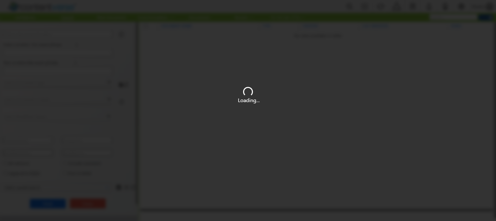
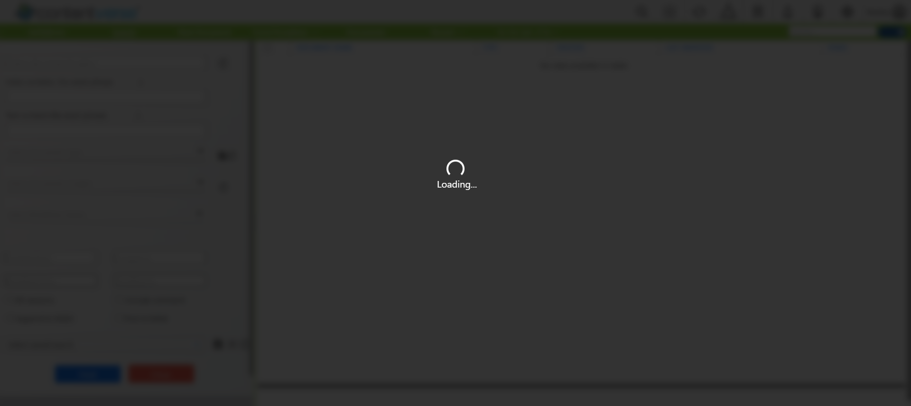

Computhink.Script.AdvancedViewer_Script
Computhink.Script.AdvancedViewer_Script
TestCase_2_AdvancedViewerWordDocument
org.openqa.selenium.TimeoutException: Expected condition failed: waiting for visibility of [[ChromeDriver: chrome on WINDOWS (50359a20fec0e7c6fe3690fb0c03b6ae)] -> xpath: //div[@id='createDocuemntNavigator']/ul/li[2]/ul/li[1]/a] (tried for 30 second(s) with 500 milliseconds interval)
Build info: version: '3.141.59', revision: 'e82be7d358', time: '2018-11-14T08:25:53'
System info: host: 'CIPLWKT014', ip: '10.4.8.14', os.name: 'Windows 10', os.arch: 'amd64', os.version: '10.0', java.version: '17.0.12'
Driver info: org.openqa.selenium.chrome.ChromeDriver
Capabilities {acceptInsecureCerts: false, browserName: chrome, browserVersion: 131.0.6778.205, chrome: {chromedriverVersion: 131.0.6778.204 (52183f9e99a..., userDataDir: C:\Users\nisha.r\AppData\Lo...}, fedcm:accounts: true, goog:chromeOptions: {debuggerAddress: localhost:52432}, javascriptEnabled: true, networkConnectionEnabled: false, pageLoadStrategy: normal, platform: WINDOWS, platformName: WINDOWS, proxy: Proxy(), setWindowRect: true, strictFileInteractability: false, timeouts: {implicit: 0, pageLoad: 300000, script: 30000}, unhandledPromptBehavior: dismiss and notify, webauthn:extension:credBlob: true, webauthn:extension:largeBlob: true, webauthn:extension:minPinLength: true, webauthn:extension:prf: true, webauthn:virtualAuthenticators: true}
Session ID: 50359a20fec0e7c6fe3690fb0c03b6ae
at org.openqa.selenium.support.ui.WebDriverWait.timeoutException(WebDriverWait.java:95)
at org.openqa.selenium.support.ui.FluentWait.until(FluentWait.java:272)
at Computhink.Generic.BaseClass.VisiblityOf(BaseClass.java:1695)
at Computhink.Pom.AdvancedViewer.CreateDocumentAdvancedViewWordDocument(AdvancedViewer.java:1363)
at Computhink.Script.AdvancedViewer_Script.TestCase_2_AdvancedViewerWordDocument(AdvancedViewer_Script.java:55)
at java.base/java.util.ArrayList.forEach(ArrayList.java:1511)
... Removed 27 stack frames
TestCase_4_Verify_Header_Option
org.openqa.selenium.interactions.MoveTargetOutOfBoundsException: move target out of bounds
(Session info: chrome=131.0.6778.205)
Build info: version: '3.141.59', revision: 'e82be7d358', time: '2018-11-14T08:25:53'
System info: host: 'CIPLWKT014', ip: '10.4.8.14', os.name: 'Windows 10', os.arch: 'amd64', os.version: '10.0', java.version: '17.0.12'
Driver info: org.openqa.selenium.chrome.ChromeDriver
Capabilities {acceptInsecureCerts: false, browserName: chrome, browserVersion: 131.0.6778.205, chrome: {chromedriverVersion: 131.0.6778.204 (52183f9e99a..., userDataDir: C:\Users\nisha.r\AppData\Lo...}, fedcm:accounts: true, goog:chromeOptions: {debuggerAddress: localhost:52432}, javascriptEnabled: true, networkConnectionEnabled: false, pageLoadStrategy: normal, platform: WINDOWS, platformName: WINDOWS, proxy: Proxy(), setWindowRect: true, strictFileInteractability: false, timeouts: {implicit: 0, pageLoad: 300000, script: 30000}, unhandledPromptBehavior: dismiss and notify, webauthn:extension:credBlob: true, webauthn:extension:largeBlob: true, webauthn:extension:minPinLength: true, webauthn:extension:prf: true, webauthn:virtualAuthenticators: true}
Session ID: 50359a20fec0e7c6fe3690fb0c03b6ae
at org.openqa.selenium.remote.http.W3CHttpResponseCodec.createException(W3CHttpResponseCodec.java:187)
at org.openqa.selenium.remote.http.W3CHttpResponseCodec.decode(W3CHttpResponseCodec.java:122)
at org.openqa.selenium.remote.http.W3CHttpResponseCodec.decode(W3CHttpResponseCodec.java:49)
at org.openqa.selenium.remote.HttpCommandExecutor.execute(HttpCommandExecutor.java:158)
at org.openqa.selenium.remote.service.DriverCommandExecutor.execute(DriverCommandExecutor.java:83)
at org.openqa.selenium.remote.RemoteWebDriver.execute(RemoteWebDriver.java:552)
at org.openqa.selenium.remote.RemoteWebDriver.perform(RemoteWebDriver.java:618)
at org.openqa.selenium.interactions.Actions$BuiltAction.perform(Actions.java:639)
at org.openqa.selenium.interactions.Actions.perform(Actions.java:595)
at Computhink.Pom.AdvancedViewer.HeaderWord(AdvancedViewer.java:2288)
at Computhink.Script.AdvancedViewer_Script.TestCase_4_Verify_Header_Option(AdvancedViewer_Script.java:71)
at java.base/java.util.ArrayList.forEach(ArrayList.java:1511)
... Removed 32 stack frames
TestCase_6_Save_And_Reopen
org.openqa.selenium.NoSuchElementException: no such element: Unable to locate element: {"method":"xpath","selector":"//*[@id="documentListTable"]/tbody/tr[1]/td[3]"}
(Session info: chrome=131.0.6778.205)
For documentation on this error, please visit: https://www.seleniumhq.org/exceptions/no_such_element.html
Build info: version: '3.141.59', revision: 'e82be7d358', time: '2018-11-14T08:25:53'
System info: host: 'CIPLWKT014', ip: '10.4.8.14', os.name: 'Windows 10', os.arch: 'amd64', os.version: '10.0', java.version: '17.0.12'
Driver info: org.openqa.selenium.chrome.ChromeDriver
Capabilities {acceptInsecureCerts: false, browserName: chrome, browserVersion: 131.0.6778.205, chrome: {chromedriverVersion: 131.0.6778.204 (52183f9e99a..., userDataDir: C:\Users\nisha.r\AppData\Lo...}, fedcm:accounts: true, goog:chromeOptions: {debuggerAddress: localhost:52432}, javascriptEnabled: true, networkConnectionEnabled: false, pageLoadStrategy: normal, platform: WINDOWS, platformName: WINDOWS, proxy: Proxy(), setWindowRect: true, strictFileInteractability: false, timeouts: {implicit: 0, pageLoad: 300000, script: 30000}, unhandledPromptBehavior: dismiss and notify, webauthn:extension:credBlob: true, webauthn:extension:largeBlob: true, webauthn:extension:minPinLength: true, webauthn:extension:prf: true, webauthn:virtualAuthenticators: true}
Session ID: 50359a20fec0e7c6fe3690fb0c03b6ae
*** Element info: {Using=xpath, value=//*[@id="documentListTable"]/tbody/tr[1]/td[3]}
at org.openqa.selenium.remote.http.W3CHttpResponseCodec.createException(W3CHttpResponseCodec.java:187)
at org.openqa.selenium.remote.http.W3CHttpResponseCodec.decode(W3CHttpResponseCodec.java:122)
at org.openqa.selenium.remote.http.W3CHttpResponseCodec.decode(W3CHttpResponseCodec.java:49)
at org.openqa.selenium.remote.HttpCommandExecutor.execute(HttpCommandExecutor.java:158)
at org.openqa.selenium.remote.service.DriverCommandExecutor.execute(DriverCommandExecutor.java:83)
at org.openqa.selenium.remote.RemoteWebDriver.execute(RemoteWebDriver.java:552)
at org.openqa.selenium.remote.RemoteWebDriver.findElement(RemoteWebDriver.java:323)
at org.openqa.selenium.remote.RemoteWebDriver.findElementByXPath(RemoteWebDriver.java:428)
at org.openqa.selenium.By$ByXPath.findElement(By.java:353)
at org.openqa.selenium.remote.RemoteWebDriver.findElement(RemoteWebDriver.java:315)
at org.openqa.selenium.support.pagefactory.DefaultElementLocator.findElement(DefaultElementLocator.java:69)
at org.openqa.selenium.support.pagefactory.internal.LocatingElementHandler.invoke(LocatingElementHandler.java:38)
at jdk.proxy2/jdk.proxy2.$Proxy26.isDisplayed(Unknown Source)
at Computhink.Pom.AdvancedViewer.SaveDocumentAndReopen(AdvancedViewer.java:2219)
at Computhink.Script.AdvancedViewer_Script.TestCase_6_Save_And_Reopen(AdvancedViewer_Script.java:87)
at java.base/java.util.ArrayList.forEach(ArrayList.java:1511)
... Removed 32 stack frames
TestCase_7_AdvancedViewerPDfDocument
org.openqa.selenium.NoSuchElementException: Cannot locate element with text: CVReports
For documentation on this error, please visit: https://www.seleniumhq.org/exceptions/no_such_element.html
Build info: version: '3.141.59', revision: 'e82be7d358', time: '2018-11-14T08:25:53'
System info: host: 'CIPLWKT014', ip: '10.4.8.14', os.name: 'Windows 10', os.arch: 'amd64', os.version: '10.0', java.version: '17.0.12'
Driver info: driver.version: unknown
at org.openqa.selenium.support.ui.Select.selectByVisibleText(Select.java:147)
at Computhink.Pom.AdvancedViewer.getSelect_Document_Type_Dropdown(AdvancedViewer.java:151)
at Computhink.Pom.AdvancedViewer.AdvancedViewPDFDocument(AdvancedViewer.java:1487)
at Computhink.Script.AdvancedViewer_Script.TestCase_7_AdvancedViewerPDfDocument(AdvancedViewer_Script.java:95)
at java.base/java.util.ArrayList.forEach(ArrayList.java:1511)
... Removed 27 stack frames
TestCase_8_AdvancedViewerExcelDocument
org.openqa.selenium.NoSuchElementException: Cannot locate element with text: CVReports
For documentation on this error, please visit: https://www.seleniumhq.org/exceptions/no_such_element.html
Build info: version: '3.141.59', revision: 'e82be7d358', time: '2018-11-14T08:25:53'
System info: host: 'CIPLWKT014', ip: '10.4.8.14', os.name: 'Windows 10', os.arch: 'amd64', os.version: '10.0', java.version: '17.0.12'
Driver info: driver.version: unknown
at org.openqa.selenium.support.ui.Select.selectByVisibleText(Select.java:147)
at Computhink.Pom.AdvancedViewer.getSelect_Document_Type_Dropdown(AdvancedViewer.java:151)
at Computhink.Pom.AdvancedViewer.AdvancedViewExcelDocumentt(AdvancedViewer.java:1577)
at Computhink.Script.AdvancedViewer_Script.TestCase_8_AdvancedViewerExcelDocument(AdvancedViewer_Script.java:103)
at java.base/java.util.ArrayList.forEach(ArrayList.java:1511)
... Removed 27 stack frames
Computhink.Script.PrintFunctionality
PrintWithcertifiedCoverPageUnlockRedaction
org.openqa.selenium.JavascriptException: javascript error: {"status":60,"value":"http://10.4.10.21:8080/CVWeb/viewDocument# has no size and location"}
(Session info: chrome=131.0.6778.205)
Build info: version: '3.141.59', revision: 'e82be7d358', time: '2018-11-14T08:25:53'
System info: host: 'CIPLWKT014', ip: '10.4.8.14', os.name: 'Windows 10', os.arch: 'amd64', os.version: '10.0', java.version: '17.0.12'
Driver info: org.openqa.selenium.chrome.ChromeDriver
Capabilities {acceptInsecureCerts: false, browserName: chrome, browserVersion: 131.0.6778.205, chrome: {chromedriverVersion: 131.0.6778.204 (52183f9e99a..., userDataDir: C:\Users\nisha.r\AppData\Lo...}, fedcm:accounts: true, goog:chromeOptions: {debuggerAddress: localhost:53123}, javascriptEnabled: true, networkConnectionEnabled: false, pageLoadStrategy: normal, platform: WINDOWS, platformName: WINDOWS, proxy: Proxy(), setWindowRect: true, strictFileInteractability: false, timeouts: {implicit: 0, pageLoad: 300000, script: 30000}, unhandledPromptBehavior: dismiss and notify, webauthn:extension:credBlob: true, webauthn:extension:largeBlob: true, webauthn:extension:minPinLength: true, webauthn:extension:prf: true, webauthn:virtualAuthenticators: true}
Session ID: ff038aa8ba6c6fec7955c223945e5bf4
at org.openqa.selenium.remote.http.W3CHttpResponseCodec.createException(W3CHttpResponseCodec.java:187)
at org.openqa.selenium.remote.http.W3CHttpResponseCodec.decode(W3CHttpResponseCodec.java:122)
at org.openqa.selenium.remote.http.W3CHttpResponseCodec.decode(W3CHttpResponseCodec.java:49)
at org.openqa.selenium.remote.HttpCommandExecutor.execute(HttpCommandExecutor.java:158)
at org.openqa.selenium.remote.service.DriverCommandExecutor.execute(DriverCommandExecutor.java:83)
at org.openqa.selenium.remote.RemoteWebDriver.execute(RemoteWebDriver.java:552)
at org.openqa.selenium.remote.RemoteWebDriver.perform(RemoteWebDriver.java:618)
at org.openqa.selenium.interactions.Actions$BuiltAction.perform(Actions.java:639)
at org.openqa.selenium.interactions.Actions.perform(Actions.java:595)
at Computhink.Generic.BaseClass.selectElement(BaseClass.java:1348)
at Computhink.Pom.Print.PrintWithcertifiedCoverPageUnlockRedaction(Print.java:934)
at Computhink.Script.PrintFunctionality.PrintWithcertifiedCoverPageUnlockRedaction(PrintFunctionality.java:67)
at java.base/java.util.ArrayList.forEach(ArrayList.java:1511)
... Removed 32 stack frames
Computhink.Script.SearchSelectDocumentLocation
M_PendingWorkflow
org.openqa.selenium.NoSuchElementException: no such element: Unable to locate element: {"method":"xpath","selector":"//*[@id='summary1']"}
(Session info: chrome=131.0.6778.205)
For documentation on this error, please visit: https://www.seleniumhq.org/exceptions/no_such_element.html
Build info: version: '3.141.59', revision: 'e82be7d358', time: '2018-11-14T08:25:53'
System info: host: 'CIPLWKT014', ip: '10.4.8.14', os.name: 'Windows 10', os.arch: 'amd64', os.version: '10.0', java.version: '17.0.12'
Driver info: org.openqa.selenium.chrome.ChromeDriver
Capabilities {acceptInsecureCerts: false, browserName: chrome, browserVersion: 131.0.6778.205, chrome: {chromedriverVersion: 131.0.6778.204 (52183f9e99a..., userDataDir: C:\Users\nisha.r\AppData\Lo...}, fedcm:accounts: true, goog:chromeOptions: {debuggerAddress: localhost:52432}, javascriptEnabled: true, networkConnectionEnabled: false, pageLoadStrategy: normal, platform: WINDOWS, platformName: WINDOWS, proxy: Proxy(), setWindowRect: true, strictFileInteractability: false, timeouts: {implicit: 0, pageLoad: 300000, script: 30000}, unhandledPromptBehavior: dismiss and notify, webauthn:extension:credBlob: true, webauthn:extension:largeBlob: true, webauthn:extension:minPinLength: true, webauthn:extension:prf: true, webauthn:virtualAuthenticators: true}
Session ID: 50359a20fec0e7c6fe3690fb0c03b6ae
*** Element info: {Using=xpath, value=//*[@id='summary1']}
at org.openqa.selenium.remote.http.W3CHttpResponseCodec.createException(W3CHttpResponseCodec.java:187)
at org.openqa.selenium.remote.http.W3CHttpResponseCodec.decode(W3CHttpResponseCodec.java:122)
at org.openqa.selenium.remote.http.W3CHttpResponseCodec.decode(W3CHttpResponseCodec.java:49)
at org.openqa.selenium.remote.HttpCommandExecutor.execute(HttpCommandExecutor.java:158)
at org.openqa.selenium.remote.service.DriverCommandExecutor.execute(DriverCommandExecutor.java:83)
at org.openqa.selenium.remote.RemoteWebDriver.execute(RemoteWebDriver.java:552)
at org.openqa.selenium.remote.RemoteWebDriver.findElement(RemoteWebDriver.java:323)
at org.openqa.selenium.remote.RemoteWebDriver.findElementByXPath(RemoteWebDriver.java:428)
at org.openqa.selenium.By$ByXPath.findElement(By.java:353)
at org.openqa.selenium.remote.RemoteWebDriver.findElement(RemoteWebDriver.java:315)
at org.openqa.selenium.support.pagefactory.DefaultElementLocator.findElement(DefaultElementLocator.java:69)
at org.openqa.selenium.support.pagefactory.internal.LocatingElementHandler.invoke(LocatingElementHandler.java:38)
at jdk.proxy2/jdk.proxy2.$Proxy26.isDisplayed(Unknown Source)
at Computhink.Pom.SearchFunction.PendingWorkflow_Document(SearchFunction.java:1946)
at Computhink.Script.SearchSelectDocumentLocation.M_PendingWorkflow(SearchSelectDocumentLocation.java:169)
at java.base/java.util.ArrayList.forEach(ArrayList.java:1511)
... Removed 32 stack frames
R_QuickSearch
java.lang.AssertionError: The following asserts failed:
Page title does not contain the expected search term! expected [true] but found [false]
at Computhink.Pom.SearchFunction.QuickSearch(SearchFunction.java:2303)
at Computhink.Script.SearchSelectDocumentLocation.R_QuickSearch(SearchSelectDocumentLocation.java:245)
at java.base/java.util.ArrayList.forEach(ArrayList.java:1511)
... Removed 29 stack frames
Computhink.Script.DashBoardScript
TC_7_Contentverse_RejectDocumentInWFReport_Report
org.openqa.selenium.JavascriptException: javascript error: {"status":60,"value":"[object HTMLSpanElement] has no size and location"}
(Session info: chrome=131.0.6778.205)
Build info: version: '3.141.59', revision: 'e82be7d358', time: '2018-11-14T08:25:53'
System info: host: 'CIPLWKT014', ip: '10.4.8.14', os.name: 'Windows 10', os.arch: 'amd64', os.version: '10.0', java.version: '17.0.12'
Driver info: org.openqa.selenium.chrome.ChromeDriver
Capabilities {acceptInsecureCerts: false, browserName: chrome, browserVersion: 131.0.6778.205, chrome: {chromedriverVersion: 131.0.6778.204 (52183f9e99a..., userDataDir: C:\Users\nisha.r\AppData\Lo...}, fedcm:accounts: true, goog:chromeOptions: {debuggerAddress: localhost:52910}, javascriptEnabled: true, networkConnectionEnabled: false, pageLoadStrategy: normal, platform: WINDOWS, platformName: WINDOWS, proxy: Proxy(), setWindowRect: true, strictFileInteractability: false, timeouts: {implicit: 0, pageLoad: 300000, script: 30000}, unhandledPromptBehavior: dismiss and notify, webauthn:extension:credBlob: true, webauthn:extension:largeBlob: true, webauthn:extension:minPinLength: true, webauthn:extension:prf: true, webauthn:virtualAuthenticators: true}
Session ID: 5227f0a2fcfa4778f1c8f4b9d6caa566
at org.openqa.selenium.remote.http.W3CHttpResponseCodec.createException(W3CHttpResponseCodec.java:187)
at org.openqa.selenium.remote.http.W3CHttpResponseCodec.decode(W3CHttpResponseCodec.java:122)
at org.openqa.selenium.remote.http.W3CHttpResponseCodec.decode(W3CHttpResponseCodec.java:49)
at org.openqa.selenium.remote.HttpCommandExecutor.execute(HttpCommandExecutor.java:158)
at org.openqa.selenium.remote.service.DriverCommandExecutor.execute(DriverCommandExecutor.java:83)
at org.openqa.selenium.remote.RemoteWebDriver.execute(RemoteWebDriver.java:552)
at org.openqa.selenium.remote.RemoteWebDriver.perform(RemoteWebDriver.java:618)
at org.openqa.selenium.interactions.Actions$BuiltAction.perform(Actions.java:639)
at Computhink.Pom.DashBoardPom.ContentverseRejectDocumentInWFReport(DashBoardPom.java:505)
at Computhink.Script.DashBoardScript.TC_7_Contentverse_RejectDocumentInWFReport_Report(DashBoardScript.java:89)
at java.base/java.util.ArrayList.forEach(ArrayList.java:1511)
... Removed 32 stack frames
TC_8_logoutFromDB
org.openqa.selenium.json.JsonException: java.lang.reflect.InvocationTargetException
Build info: version: '3.141.59', revision: 'e82be7d358', time: '2018-11-14T08:25:53'
System info: host: 'CIPLWKT014', ip: '10.4.8.14', os.name: 'Windows 10', os.arch: 'amd64', os.version: '10.0', java.version: '17.0.12'
Driver info: driver.version: RemoteWebDriver
at org.openqa.selenium.json.JsonOutput.convertUsingMethod(JsonOutput.java:332)
at org.openqa.selenium.json.JsonOutput.lambda$new$16(JsonOutput.java:155)
at org.openqa.selenium.json.JsonOutput.write(JsonOutput.java:264)
at org.openqa.selenium.json.JsonOutput.lambda$null$21(JsonOutput.java:168)
at java.base/java.util.LinkedHashMap$LinkedValues.forEach(LinkedHashMap.java:647)
at org.openqa.selenium.json.JsonOutput.lambda$new$22(JsonOutput.java:168)
at org.openqa.selenium.json.JsonOutput.write(JsonOutput.java:264)
at org.openqa.selenium.json.JsonOutput.lambda$null$23(JsonOutput.java:177)
at com.google.common.collect.SingletonImmutableBiMap.forEach(SingletonImmutableBiMap.java:65)
at org.openqa.selenium.json.JsonOutput.lambda$new$24(JsonOutput.java:176)
at org.openqa.selenium.json.JsonOutput.write(JsonOutput.java:264)
at org.openqa.selenium.json.JsonOutput.write(JsonOutput.java:255)
at org.openqa.selenium.json.Json.toJson(Json.java:42)
at org.openqa.selenium.remote.http.AbstractHttpCommandCodec.encode(AbstractHttpCommandCodec.java:227)
at org.openqa.selenium.remote.http.AbstractHttpCommandCodec.encode(AbstractHttpCommandCodec.java:117)
at org.openqa.selenium.remote.HttpCommandExecutor.execute(HttpCommandExecutor.java:152)
at org.openqa.selenium.remote.service.DriverCommandExecutor.execute(DriverCommandExecutor.java:83)
at org.openqa.selenium.remote.RemoteWebDriver.execute(RemoteWebDriver.java:552)
at org.openqa.selenium.remote.RemoteWebDriver.perform(RemoteWebDriver.java:618)
at org.openqa.selenium.interactions.Actions$BuiltAction.perform(Actions.java:639)
at org.openqa.selenium.interactions.Actions.perform(Actions.java:595)
at Computhink.Generic.BaseClass.movingElement(BaseClass.java:1326)
at Computhink.Pom.DashBoardPom.LogoutfromDb(DashBoardPom.java:231)
at Computhink.Script.DashBoardScript.TC_8_logoutFromDB(DashBoardScript.java:97)
at java.base/java.util.ArrayList.forEach(ArrayList.java:1511)
Suppressed: org.openqa.selenium.json.JsonException: Attempting to close incomplete json stream
Build info: version: '3.141.59', revision: 'e82be7d358', time: '2018-11-14T08:25:53'
System info: host: 'CIPLWKT014', ip: '10.4.8.14', os.name: 'Windows 10', os.arch: 'amd64', os.version: '10.0', java.version: '17.0.12'
Driver info: driver.version: RemoteWebDriver
at org.openqa.selenium.json.JsonOutput.close(JsonOutput.java:279)
at org.openqa.selenium.json.Json.toJson(Json.java:44)
... 39 more
at org.openqa.selenium.json.JsonOutput.convertUsingMethod(JsonOutput.java:328)
... 51 more
Caused by: org.openqa.selenium.NoSuchElementException: no such element: Unable to locate element: {"method":"xpath","selector":"//li[@id='dock_dashboardLogout']//div[@role='presentation']//div[1]"}
(Session info: chrome=131.0.6778.205)
For documentation on this error, please visit: https://www.seleniumhq.org/exceptions/no_such_element.html
Build info: version: '3.141.59', revision: 'e82be7d358', time: '2018-11-14T08:25:53'
System info: host: 'CIPLWKT014', ip: '10.4.8.14', os.name: 'Windows 10', os.arch: 'amd64', os.version: '10.0', java.version: '17.0.12'
Driver info: org.openqa.selenium.chrome.ChromeDriver
Capabilities {acceptInsecureCerts: false, browserName: chrome, browserVersion: 131.0.6778.205, chrome: {chromedriverVersion: 131.0.6778.204 (52183f9e99a..., userDataDir: C:\Users\nisha.r\AppData\Lo...}, fedcm:accounts: true, goog:chromeOptions: {debuggerAddress: localhost:52910}, javascriptEnabled: true, networkConnectionEnabled: false, pageLoadStrategy: normal, platform: WINDOWS, platformName: WINDOWS, proxy: Proxy(), setWindowRect: true, strictFileInteractability: false, timeouts: {implicit: 0, pageLoad: 300000, script: 30000}, unhandledPromptBehavior: dismiss and notify, webauthn:extension:credBlob: true, webauthn:extension:largeBlob: true, webauthn:extension:minPinLength: true, webauthn:extension:prf: true, webauthn:virtualAuthenticators: true}
Session ID: 5227f0a2fcfa4778f1c8f4b9d6caa566
*** Element info: {Using=xpath, value=//li[@id='dock_dashboardLogout']//div[@role='presentation']//div[1]}
at org.openqa.selenium.remote.http.W3CHttpResponseCodec.createException(W3CHttpResponseCodec.java:187)
at org.openqa.selenium.remote.http.W3CHttpResponseCodec.decode(W3CHttpResponseCodec.java:122)
at org.openqa.selenium.remote.http.W3CHttpResponseCodec.decode(W3CHttpResponseCodec.java:49)
at org.openqa.selenium.remote.HttpCommandExecutor.execute(HttpCommandExecutor.java:158)
at org.openqa.selenium.remote.service.DriverCommandExecutor.execute(DriverCommandExecutor.java:83)
at org.openqa.selenium.remote.RemoteWebDriver.execute(RemoteWebDriver.java:552)
at org.openqa.selenium.remote.RemoteWebDriver.findElement(RemoteWebDriver.java:323)
at org.openqa.selenium.remote.RemoteWebDriver.findElementByXPath(RemoteWebDriver.java:428)
at org.openqa.selenium.By$ByXPath.findElement(By.java:353)
at org.openqa.selenium.remote.RemoteWebDriver.findElement(RemoteWebDriver.java:315)
at org.openqa.selenium.support.pagefactory.DefaultElementLocator.findElement(DefaultElementLocator.java:69)
at org.openqa.selenium.support.pagefactory.internal.LocatingElementHandler.invoke(LocatingElementHandler.java:38)
at jdk.proxy2/jdk.proxy2.$Proxy26.getWrappedElement(Unknown Source)
at org.openqa.selenium.interactions.PointerInput$Origin.asArg(PointerInput.java:204)
at org.openqa.selenium.interactions.PointerInput$Move.encode(PointerInput.java:155)
at org.openqa.selenium.interactions.Sequence.encode(Sequence.java:75)
at org.openqa.selenium.interactions.Sequence.toJson(Sequence.java:84)
... 55 more
... Removed 35 stack frames
 Computhink.Script.SecureLink_Negative_Scenerio
Computhink.Script.AdvancedViewer_Script
Computhink.Script.RoomContextFunction_TakeOwnerShip_ReleaseOwnerShip
Computhink.Script.Thumbnail_MicroSoft_FabBTN
Computhink.Script.AnnotationFunctionality
Computhink.Script.RegisterStamp__Advanced_Viewing
Computhink.Script.SecureLink
Computhink.Script.SearchSelectDocumentLocation
Computhink.Script.DashBoardScript
Computhink.Script.SecureLink_Negative_Scenerio
Computhink.Script.AdvancedViewer_Script
Computhink.Script.RoomContextFunction_TakeOwnerShip_ReleaseOwnerShip
Computhink.Script.Thumbnail_MicroSoft_FabBTN
Computhink.Script.AnnotationFunctionality
Computhink.Script.RegisterStamp__Advanced_Viewing
Computhink.Script.SecureLink
Computhink.Script.SearchSelectDocumentLocation
Computhink.Script.DashBoardScript
C:\Users\nisha.r\eclipse-workspace\CVS_Auto_2024_B2_64Bit\NishaRautomationFile.xml
<?xml version="1.0" encoding="UTF-8"?>
<!DOCTYPE suite SYSTEM "https://testng.org/testng-1.0.dtd">
<suite name="Suite" guice-stage="DEVELOPMENT">
<listeners>
<listener class-name="Computhink.Generic.ListenersRetry"/>
<listener class-name="Computhink.Generic.CustomTestLisner"/>
</listeners>
<test thread-count="5" name="Test1">
<classes>
<class name="Computhink.Script.AnnotationFunctionality"/>
</classes>
</test> <!-- Test1 -->
<test thread-count="5" name="Test2">
<classes>
<class name="Computhink.Script.AdvancedViewer_Script"/>
</classes>
</test> <!-- Test2 -->
<test thread-count="5" name="Test3">
<classes>
<class name="Computhink.Script.SearchSelectDocumentLocation"/>
</classes>
</test> <!-- Test3 -->
<test thread-count="5" name="Test 9">
<classes>
<class name="Computhink.Script.Favorites"/>
</classes>
</test> <!-- Test 9 -->
<test thread-count="5" name="Test 10">
<classes>
<class name="Computhink.Script.DashBoardScript"/>
</classes>
</test> <!-- Test 10 -->
<test thread-count="5" name="Test 11">
<classes>
<class name="Computhink.Script.SecureLink"/>
</classes>
</test> <!-- Test 11 -->
<test thread-count="5" name="Test 12">
<classes>
<class name="Computhink.Script.PrintFunctionality"/>
</classes>
</test> <!-- Test 12 -->
<test thread-count="5" name="Test 13">
<classes>
<class name="Computhink.Script.SecureLink_Negative_Scenerio"/>
</classes>
</test> <!-- Test 13 -->
<test thread-count="5" name="Test 14">
<classes>
<class name="Computhink.Script.Print_Email_Export_Negative_Scenerio"/>
</classes>
</test> <!-- Test 14 -->
<test thread-count="5" name="Test 16">
<classes>
<class name="Computhink.Script.Thumbnail_MicroSoft_FabBTN"/>
</classes>
</test> <!-- Test 16 -->
<test thread-count="5" name="Test19">
<classes>
<class name="Computhink.Script.RegisterStamp__Advanced_Viewing"/>
</classes>
</test> <!-- Test19 -->
<test thread-count="5" name="Test20">
<classes>
<class name="Computhink.Script.RoomContextFunction_TakeOwnerShip_ReleaseOwnerShip"/>
</classes>
</test> <!-- Test20 -->
<test thread-count="5" name="Test21">
<classes>
<class name="Computhink.Script.RoomContextMenu_CopyPaste"/>
</classes>
</test> <!-- Test21 -->
<test thread-count="5" name="Test22">
<classes>
<class name="Computhink.Script.RoomContextMenu_Notification"/>
</classes>
</test> <!-- Test22 -->
<test thread-count="5" name="Test23">
<classes>
<class name="Computhink.Script.RMC_NodeProperties"/>
</classes>
</test> <!-- Test23 -->
<test thread-count="5" name="Test24">
<classes>
<class name="Computhink.Script.RMC_Custom_Document_Types"/>
</classes>
</test> <!-- Test24 -->
</suite> <!-- Suite -->
Tests for Suite
- Test1 (1 class)
- Test2 (1 class)
- Test3 (1 class)
- Test 9 (1 class)
- Test 10 (1 class)
- Test 11 (1 class)
- Test 12 (1 class)
- Test 13 (1 class)
- Test 14 (1 class)
- Test 16 (1 class)
- Test19 (1 class)
- Test20 (1 class)
- Test21 (1 class)
- Test22 (1 class)
- Test23 (1 class)
- Test24 (1 class)
Groups for Suite
Times for Suite
Total running time: 1 hours
Reporter output for Suite
TC_K_Polygon
Scenario 11: Verify polygon annotation
Mouse hover on annotation tool icon
Click on polygon tool button
Draw the polygon on the page. The Polygon annotation has been updated on the document page successfully.
Scenario 12:Close and reopen the document to check whether the annotations are visible or not
Click on close icon
Reopen the document again
Page alert is not present
All the added annotations are visible on the page successfully...
All updated annotations are visible on the second page, there is no data loss
TC_G_Rectangle_Annotation
Scenario 06: Verify Rectangle annotation tool
Mouse hover on annotation tool icon
Click on the rectangle tool button
Draw the rectangle shape on the page
Click on save button
The Rectangle annotation has been updated on the document page successfully
TC_H_StampAnnotation
Scenario 07: Verify Stamp annotation tool
Switch to the second page
Mouse hover on annotation tool icon
Click on Stamp annotation tool button
Drag on the page, it will open the add picture dialog box
Click on choose file
Add the image from folder by using Auto IT
Click on add picture dialog OK button
Click on save button
The Stamp annotation has been updated on the document page successfully
TC_J_Signature_Annotation
Scenario 10: Verify Signature annotation
Click on signature tool button
Single click on the page
Password dialog box not present
Add the signature on the page
Click on save button
The Signature annotation has been updated on the document page successfully
TC_A_DefaultView
User click on setting icon
User click on the my preference tab
User changes pdf document as default viewing
User click on Apply button and the default view successfully applied...
TC_C_HighLight_Annotation
Scenario 03: Verify Highlight annotation
Click on annotation icon
Click on highlight tool button
Highlight a portion of the page
Click on save icon
The Highlight annotation has been updated on the document page successfully
TC_I_LineAnnotation_Ellipse_Annotation
Scenario 08: Verify Line annotation
Mouse hover on annotation tool icon
Click on the line tool button
Draw the line on the page
Click on the save button
The line annotation has been updated on the document page successfully
==============================================================================
Scenario 9: Verify ellipse annotation
Mouse hover on the annotation tool icon
Click on ellipse tool button
Draw the ellipse on the page
Click on save button
The ellipse annotation has been updated on the document page successfully
TC_E_StikyNote_Annotation
Scenario 04: Verify Sticky note annotation
Click on Sticky Note tool button
Click on the page and add stickynote
Sticky note tool dialog opened, Place comments on the stickynote dialog box
Click on the stickynote tool dialog box OK button
Click on save button
The StickyNote annotation has been updated on the document page successfully
Login
Scenario 01: Log into EWA
Enter valid user name into username field
UserName Details: Rnisha
Enter valid password into password field
Select a Room
Selected Room name: TestServer_2024B264bit.vw56demo
Captcha is not present, proceeding with login.
Click Login button
Session for user is already active. Do you want to create a new session? Dialog box displayed. User clicks OK button.
User logged in successfully...
TC_F_RubberStampAnnotation
Scenario 05: Verify RubberStamp annotation
Mouse hover on annotation icon
Click on the Rubber Stamp tool button
Drag the Rubber stamp on the page
Choose Rubber stamp from the dropdown list and click on annotation properties dialog OK button
Click on save button
The Rubber stamp annotation has been updated on the document page successfully
TC_B_Redaction_UnlockRedaction
Scenario 2: Open the document and Add Redaction Annotation on the page
Click on room context menu tab
Mouse hover on the annotation icon
Click on Redaction button
Create redaction on the page
Enter the name(label) for the redaction
Enter a password to the lock Redaction dialog box
Confirm a password to the lock Redaction dialog box
Click Redaction dialog OK button
Mouse hover on annotation tool icon
Redaction added on the page successfully...
Click on unlock redaction button in the annotation submenu
Click Redaction dialog OK button
Enter a valid password into the unlock Redaction dialog box
The Redaction got unlocked successfully...
Create Redaction and Unlock Redaction Verified successfully...
TestCase_5_Verify_Footer_Option
Click on link button
Entered text into the textbox.
Enter Link into the textbox
Link added successfully...
Word Document verified successful
TestCase_3_Verify_Link_Option
Click on link button
Enter Link into the textbox
Link added successfully...
Word Document verified successful
TestCase_1_AdvancedViewerOptionSelection
Scenario 1: Go to My Preference, Change the Default viewing as Advanced viewer
Click on Setting icon
Go to My preference
Set the office document to advanced viewing
Set the PDF document to advanced viewing
Click on Apply button
Advanced viewer mode has been set successfully...
TestCase_6_Save_And_Reopen
Click on the save icon from viewer toolbar
The added data has been saved successfully...
Click on the close icon
Test Failed: TestCase_6_Save_And_Reopen
View Screenshot

TestCase_2_AdvancedViewerWordDocument
Scenario 2: Create a document with Advanced viewer - new word document.
Click the New Document tab.
Click the 'Select destination folder location' text box.
'Browser for folder' dialog should be open.
Expand the cabinet
Test Failed: TestCase_2_AdvancedViewerWordDocument
View Screenshot

TestCase_7_AdvancedViewerPDfDocument
Scenario 4: Create a document with Advanced viewer - new PDF document
Click on New Document tab
Test Failed: TestCase_7_AdvancedViewerPDfDocument
View Screenshot

TestCase_4_Verify_Header_Option

TestCase_8_AdvancedViewerExcelDocument
Scenario 3: Create a document with Advanced viewer - 'New Excel Document'
Click on the New Document tab
Test Failed: TestCase_8_AdvancedViewerExcelDocument
View Screenshot

A_BlankSearch
Scenario 01: Search tab - blank search
Scenario 01: Search tab - blank search
User clicks on Search tab
Search tab is displayed successfully.
Click on the Find button
Search result : 100
Document list verified succesful
Document list is displayed after clicking Find button.
Click on Clear button
Searched document list cleared successfully
E_AllOfTheWordSearchIndex
Scenario 05:Search tab Index contains 'all of the word'
Click on Index contains search 'all of the word' submenu
Enter value in index contains search textbox
'All of the word search' option selected successful
User enters the value into index contains text box
Data entered successful
Entered Data details:Test
Click on find button
Search result : 128
Document list verified succesful
It should display the document on the page, Document dislpayed successfull...
Click on meta data option
Index contains search 'all of the word' working fine...
It should display the document on the page, Document dislpayed successfull...
Index contains search 'all of the word' working fine...
Click on clear button
O_TextSearchWithAllOftheWords
Scenario 20:Search tab- TextContains search 'AtLeasetOneOFTheWord' option
NOTE:Start the indexer server then execute the mentioned SQL statement 'ALTER FULLTEXT INDEX ON Indexer START FULL POPULATION
Select * from Indexer
Click on search tab
Select text contains 'AtLeastOneOFTheWord' option
Start the indexer by using sql statement
It will automatically list all the indexed document relate to the search
open the document from the list, verify the thumbnail it will be highlihted for the particular search.
AlertNotPresent
L_Reject_WF
Scenario 14:Verify Search tab-Workflow status(Reject option)
Click on workflow status dropdown
Workflowdropdown option expanded successful
Select Reject option
Workflowdropdown REJECT option NOT selected successful
Click on find button
It should display the rejected workflow documents on the page
Search result : 3
Document list verified succesful
It should display document on the page
Click on summary button
Reject Document Summary Details Mentioned Below:
Reject Document Summary Details Mentioned Below:
Summary verified; Rejected Document Listed successfully. Summary cancel button clicked successful Click on clear button Listed document cleared successfully... =================================================================
| 1 | Joe | Originator | - | Originator | 2014-12-19 16:32 | Dynamic User demo | ||
| 2 | joe | Approval | updated and approved | Approved | 2014-12-19 16:32 | 2015-09-18 10:53 | Dynamic User demo | |
| 3 | Joe | Authorize | - | Rejected | 2015-09-18 10:53 | 2016-04-08 10:30 | Dynamic User demo | |
| 4 | Joe | Authorize | - | Rejected, Workflow completed | 2016-04-08 10:30 | Dynamic User demo | ||
| 5 | Joe | - | - | Reviewed by Originator | 2017-03-24 12:30 | Dynamic User demo |
Summary verified; Rejected Document Listed successfully. Summary cancel button clicked successful Click on clear button Listed document cleared successfully... =================================================================
O_TaskCompletedWFDocumentt
Scenario 18: Verify Search tab-Workflow status(TaskCompleted option)
Task completed workflow selected successful
Select a workflow dropdown Task completed Option
Click on find button
Search result : 3
Document list verified succesful
Click on summary button
Worflow Document Summary Details Mentioned Below:
Click on clear button Listed document cleared successfully... ===============================================================================
Worflow Document Summary Details Mentioned Below:
| 1 | pujita | Originator | - | Originator | 2024-12-04 19:51 | Demo_Workflow | ||
| 2 | DemoUser1 | Demo_Task_1 | - | Approved, Task completed | 2024-12-04 19:51 | Demo_Workflow | ||
| 3 | nisha | Demo_Task_1 | - | Approved, Task completed | 2024-12-04 19:51 | Demo_Workflow | ||
| 4 | pujita | Demo_Task_1 | 2024-12-04 19:52:11: fd | Approved | 2024-12-04 19:51 | 2024-12-04 19:52 | Demo_Workflow | |
| 5 | DemoUser2 | Demo_Task_2 | - | Approved, Workflow completed | 2024-12-04 19:52 | Demo_Workflow | ||
| 6 | pujita | Demo_Task_2 | 2024-12-04 19:52:32: ds | Approved | 2024-12-04 19:52 | 2024-12-04 19:52 | Demo_Workflow | |
| 7 | subham | Demo_Task_2 | - | Approved, Workflow completed | 2024-12-04 19:52 | Demo_Workflow | ||
| 8 | pujita | Originator | - | Originator | 2024-12-04 20:31 | Demo_Workflow | ||
| 9 | DemoUser1 | Demo_Task_1 | - | Approved, Task completed | 2024-12-04 20:31 | Demo_Workflow | ||
| 10 | nisha | Demo_Task_1 | - | Approved, Task completed | 2024-12-04 20:31 | Demo_Workflow | ||
| 11 | pujita | Demo_Task_1 | 2024-12-04 20:31:56: hjhjhk | Approved | 2024-12-04 20:31 | 2024-12-04 20:31 | Demo_Workflow | |
| 12 | DemoUser2 | Demo_Task_2 | - | RFI | 2024-12-04 20:31 | Demo_Workflow |
Click on clear button Listed document cleared successfully... ===============================================================================
D_AtLeastOneWordSeachIndex
Scenario 04: Search tab- Index contains 'AtleastOneOfTheWord'
User clicks on Search tab
User click on 'AtleastOneOfTheWord' submenu
'At least one of the word' option selected successful
User enters the value into index contains text box
Data entered successful
Entered Data details:Employment
User clicks on find button
Search result count :0
Document list verified succesful
It should display document on the page
Search functionality with exact phrase index contains search working fine
Click on Clear button
S_DocumentSearch
Scenario 24:Folder document search
Open a folder
Enter document name in folder search text box
It should display the particular document on the page
The documents Search from folder completed, working fine
G_FolderLevelSearch
Scenario 10: Verify 'Select document location' - folder
Click on search tab
Click on 'Select search location' textbox
Search select location opened successful
Select search location
Cabinet list in current room: 1.2_Autoamtion_CAbinet
Cabinet list in current room: 1_AutomationTestCab
Cabinet list in current room: 2_Autoamtion_CAbinet
Cabinet list in current room: 2015 Lots 001 - 100
Cabinet list in current room: Accounts Payable
Cabinet list in current room: Accounts Recievable
Cabinet list in current room: AIP cabinet
Cabinet list in current room: Archive
Cabinet list in current room: BofA
Cabinet list in current room: Customer Accounts
Cabinet list in current room: CV2024 B02 upgrade test
Cabinet list in current room: CVReports
Cabinet list in current room: Forms
Cabinet list in current room: Human Resource
Cabinet list in current room: Insurance
Cabinet list in current room: ISO Main
Cabinet list in current room: IT Department
Cabinet list in current room: Land Registry
Cabinet list in current room: Legal Dept.
Cabinet list in current room: Manual Email Archive
Cabinet list in current room: Manufacturing
Cabinet list in current room: Operations
Cabinet list in current room: Review Cabinet
Cabinet list in current room: Review Documents
Cabinet list in current room: Students
Cabinet list in current room: Tax Returns
Cabinet list in current room: Vidya cabinet
Expand a cabinet
1_AutomationTestCabCabinet expanded successfully...
Expand a drawer
Automation Test DrawerDrawer expanded successfully...
Select a folder
Autoamtion_Test_Folder 1 Named folder selected successful
Click on 'Select search location' dialog OK button
Click on find button
Search result : 52
Document list verified succesful
It should display document on the page
It should display the particular selected folder documents on the page
Clear search criteria
Page cleared successful
AppendToHit
Scenario 06:Search tab - AppendToHitlist checkbox
JavascriptException handled
Enter the value into index contains search text box
First do a normal search for listing the document purpose
Data entered successful
Entered Data details:Document
Click on find button
Search result : 105
Document list verified succesful
It should display document on the page
It should list the document on document page
Clear the index contains search text box,which has given before for normal search
Click on append to hit list check box
Append to hitlist option selected successful
After selecting append to hitlist checkbox, Enter the value into index contains search text box
Data entered successful
Entered Data details:dfsd
User clicks on find button
Search result : 105 of 105
Document list verified succesful
It should display document on the page
It appends the search document in the listed document
The given document name must match with the searched document name,
Document appends on the page successful; given document name : dfsd
Append Document name : AdvancedViewWordDocument
===========================================================================
All_Version
Scneario 09: Search tab - all version check box
User enter the value in index contains search text box
Click on all version check box
Click on find button
It should display the document which in containing version
Click on Clear button
B_ExactSearchInIndexWithLoadMoreCount
Scenario 02: Search - load more count
User clicks on Search tab
Search tab clicked successfully...
Click on find button
Document list is displayed after clicking Find button.
Click on metadata option
It should list the below-mentioned options:
Document Type
Properties
Comments [0]
[0]
References [0]
Versions
General
History
Scroll down the searched list; user can now see the 'Load More' button.
Click on 'Load More' button
Load More button clicked
It should list the next set of documents; click another document and verify metadata options.
It should list the below-mentioned options:
Document Type
Properties
Comments [0]
[0]
References [0]
Versions
General
History
Scroll down the searched list again to show 'Load More' button
Load More button clicked again
No alert is present.
Click on OK button
It should close the alert dialog successfully.
Click on clear button
I_CabinetLevel
Scenario 12: Verify 'Select Document location'- cabinet
Click on search tab
Click on 'Select Document location' textbox
Expand a cabinet
Select search location
Cabinet list in current room: 1.2_Autoamtion_CAbinet
Cabinet list in current room: 1_AutomationTestCab
Cabinet list in current room: 2_Autoamtion_CAbinet
Cabinet list in current room: 2015 Lots 001 - 100
Cabinet list in current room: Accounts Payable
Cabinet list in current room: Accounts Recievable
Cabinet list in current room: AIP cabinet
Cabinet list in current room: Archive
Cabinet list in current room: BofA
Cabinet list in current room: Customer Accounts
Cabinet list in current room: CV2024 B02 upgrade test
Cabinet list in current room: CVReports
Cabinet list in current room: Forms
Cabinet list in current room: Human Resource
Cabinet list in current room: Insurance
Cabinet list in current room: ISO Main
Cabinet list in current room: IT Department
Cabinet list in current room: Land Registry
Cabinet list in current room: Legal Dept.
Cabinet list in current room: Manual Email Archive
Cabinet list in current room: Manufacturing
Cabinet list in current room: Operations
Cabinet list in current room: Review Cabinet
Cabinet list in current room: Review Documents
Cabinet list in current room: Students
Cabinet list in current room: Tax Returns
Cabinet list in current room: Vidya cabinet
Expand a cabinet
1_AutomationTestCabCabinet expanded successfully...
Click on find button
Search result : 100
Document list verified succesful
It should display document on the page
It should display the searched cabinet document on the page
Document list cleared...
N_TextSearchWithSQLData
Scenario 19:Search tab- TextContains search 'alloftheword' option
NOTE:Start the indexer server then execute the mentioned SQL statement 'ALTER FULLTEXT INDEX ON Indexer START FULL POPULATION
Select * from Indexer
Click on search tab
Select text contains 'alloftheword' option
Start the indexer by using sql statement
Click on find button
It will automatically list all the indexed document relate to the search
Click on find button
AlertNotPresent
open the document from the list, verify the thumbnail it will be highlihted for the particular search.
AlertNotPresent
J_DocumentDropDown
Scenario 13: Verify search tab ('Document Type')
Click on document type dropdown
User should select a document type
Document type List: Acknowledgement Letter
Document type List: Affidavit of No Creditors
Document type List: Affidavit of No Lien
Document type List: All doc type
Document type List: Analytics
Document type List: Anchorage Rental Agreement
Document type List: App for Educ Expense
Document type List: Application
Document type List: Application for Employment
Document type List: Appraisal
Document type List: Architectural Extension Request
Document type List: Articles of Incorporation
Document type List: Audit Report
Document type List: Audit Schedule
Document type List: Boat OP,REG,INDEM,Release
Document type List: Case Review
Document type List: Cell Services Agreement
Document type List: Cert of Test
Document type List: Certificate
Document type List: Change in Status
Document type List: Change Order
Document type List: Check
Document type List: Claim Form
Document type List: Complaint
Document type List: Contract
Document type List: Credit Increase Memo
Document type List: Customer Order
Document type List: CVReports
Document type List: Deed
Document type List: Document Control
Document type List: Drawing
Document type List: DrawingMicro
Document type List: Dynamic Workflow Doc
Document type List: EAS Email Archive
Document type List: Education Agreement
Document type List: Education Expense
Document type List: Email
Document type List: Employee Expense Rpt.
Document type List: Employee Record
Document type List: Employee withholding Exemption Cert
Document type List: Enquire MTA
Document type List: Equipment Checkout Agreement
Document type List: Estoppel Affidavit of Mortgagor
Document type List: Exam Paper
Document type List: Excel WorkSheets
Document type List: FC Expense Report
Document type List: FC Order
Document type List: Funds Transfer Form
Document type List: General DNU
Document type List: General Green Sheet
Document type List: Government Doc
Document type List: Graphics(R)
Document type List: Groupwise Email
Document type List: GWAVA Email Archive
Document type List: Health Insurance Claim Form
Document type List: Holiday Request
Document type List: HR Forms
Document type List: Identification
Document type List: Incident Report
Document type List: Invoice 1
Document type List: IXR document
Document type List: Land Registration
Document type List: Lease Authorization
Document type List: LOT Specification
Document type List: Ltd Power of Attorney
Document type List: Map
Document type List: Material
Document type List: Membership Agreement
Document type List: MOC Request
Document type List: Model Specification.
Document type List: MS DocTypes
Document type List: MSOfficeDocs
Document type List: NEM Info Checklist
Document type List: New Hire
Document type List: NEw User Form
Document type List: News Item
Document type List: NP Drawing
Document type List: NP Procedure
Document type List: NP Specifications
Document type List: Parental Leave Request
Document type List: PASSPORT APPLICATION
Document type List: Personnel & Payroll Data
Document type List: Photo Image Picture
Document type List: PoliceCertificate
Document type List: Policy
Document type List: Presentation
Document type List: Proposal (R)
Document type List: Purchase Order
Document type List: QB Company Backup
Document type List: QB Company Master File
Document type List: Resume
Document type List: Return to Work Interview
Document type List: Safe Work Permit
Document type List: Safety Data Sheet
Document type List: Sales Invoice
Document type List: Sales Quote
Document type List: Sleep Study Prescription
Document type List: Sony Specification Sheet
Document type List: Stock Research
Document type List: Tax Return
Document type List: Technical Bulletin
Document type List: Technical Memo/News
Document type List: Test Script1
Document type List: test1
Document type List: testdoc
Document type List: Ticker
Document type List: Training Sessions
Document type List: Transfer Docket
Document type List: Unique violation
Document type List: Vendor List
Document type List: Video Report
Document type List: Volume(s)
Document type List: Warrant
Selected document type details: Affidavit of No Creditors
Document type selected successfully
Click on find button
Search result : 100
Document list verified succesful
Selected document type name : Affidavit of No Creditors Listed document type name: CVReports Both should be same name
Document type name matched successfully...
It should display document on the page
It should display the searched document type documents on the page
Click on clear button; It should clear the search list
P_TextSearchWithAtpartOftheWord
Scenario 21:Search tab- TextContains search 'AtPartOFTheWord' option
NOTE:Start the indexer server then execute the mentioned SQL statement 'ALTER FULLTEXT INDEX ON Indexer START FULL POPULATION
Select * from Indexer
Click on search tab
Click on 'AtpartOFtheWord' word submenu
It will automatically list all the indexed document relate to the search
User click on Find button
open the document from the list, verify the thumbnail it will be highlihted for the particular search.
Find_In_Hit_List
scenario 07: Verify search tab - FindInHitlist checkbox
Enter the value in index contains search textbox
Click on find in hitlist check box
Click on find button
It should display only the searched document on the document page
===========================================================================
Scneario 08: Search tab - Include comment checkbox
Enter the value in text contains search text box
Click on Inclue_comment check box
Click on find button
It should list below mentioned options:
Document Type
Properties
Comments [1]
[1]
References [0]
Versions
General
History
It should display the document which is containing the comment..
Click on clear button
It should clear the searched list successfully
===========================================================================
K_DocumentCreatorDropDown
Scenario 14:Verify Search tab ('document creator')
Scenario 14: Verify Search tab ('document creator')
Click on search tab
Document creator dropdown NOT selected successful
Select a document creator from the dropdown
Creator List: __vmware_user__
Creator List: abby
Creator List: Admin
Creator List: admin1
Creator List: admin3
Creator List: administrator
Creator List: AIPUser1
Creator List: AIPUser2
Creator List: AIPUser3
Creator List: AIPUser4
Creator List: ASPNET
Creator List: Beth
Creator List: Brent
Creator List: Chris
Creator List: cvadmin
Creator List: DemoUser1
Creator List: DemoUser2
Creator List: dipak
Creator List: ECUser2
Creator List: fazal
Creator List: Gonzalez MM
Creator List: Guest
Creator List: HelpAssistant
Creator List: Henry
Creator List: IUSR_COMPUTHI-AEF580
Creator List: IWAM_COMPUTHI-AEF580
Creator List: jim
Creator List: Joe
Creator List: les
Creator List: michelle
Creator List: Mike
Creator List: nisha
Creator List: PNUser1
Creator List: PNUser2
Creator List: pujita
Creator List: rnisha
Creator List: robert
Creator List: Sa1
Creator List: Sam
Creator List: srikanth
Creator List: subadmin
Creator List: subadmin1
Creator List: subham
Creator List: Sue
Creator List: SUPPORT_388945a0
Creator List: Temp
Creator List: Tom
Creator List: vanitha
Creator List: vidya
Creator List: vince
Select a specific document creator
Selected creator name details :admin1
Click on find button
Search result : 4
Document list verified succesful
It should display document on the page
Given creator name :admin1Should be same as listed creator name: admin1
Document creator name selected successful...
It should display the searched creator documents on the page
CreateAndModifyDate
Scenario 25:Verify Date enter functionality
Click on search tab
Click on Datefrom
Enter the datefrom
Click on ok button
Click on Dateto
Enter the Dateto
Click on ok button
Click on find
N_CompletedWF_Document
Scenario 16: Verify Search tab - Workflow status (Workflow Completed option)
Selected a workflow dropdown 'Workflow Completed' option
User clicked on the Find button
Search result : 20
Document list verified succesful
Click on summary button
Worflow Document Summary Details Mentioned Below:
Click on clear button Listed documents cleared successfully... =============================================================================== Scenario 17: Verify Search tab - Workflow status (End Workflow option) Clicked on workflow dropdown Selected a workflow dropdown 'End Workflow' option User clicked on the Find button Search result : 7 Document list verified succesful Click on summary button
Worflow Document Summary Details Mentioned Below:
Click on clear button Listed documents cleared successfully... ===============================================================================
Worflow Document Summary Details Mentioned Below:
| 1 | pujita | Originator | - | Originator | 2024-12-09 16:00 | Demo_Workflow | ||
| 2 | DemoUser1 | Demo_Task_1 | - | Rejected, Task completed | 2024-12-09 16:00 | Demo_Workflow | ||
| 3 | nisha | Demo_Task_1 | - | Rejected, Task completed | 2024-12-09 16:00 | Demo_Workflow | ||
| 4 | pujita | Demo_Task_1 | 2024-12-09 16:01:13: Rejecte the workflow | Rejected | 2024-12-09 16:00 | 2024-12-09 16:01 | Demo_Workflow | |
| 5 | pujita | Demo_Task_1 | - | Rejected, Workflow completed | 2024-12-09 16:01 | Demo_Workflow | ||
| 6 | pujita | Originator | - | Originator | 2024-12-09 16:01 | Demo_Workflow | ||
| 7 | DemoUser1 | Demo_Task_1 | - | Approved, Task completed | 2024-12-09 16:01 | Demo_Workflow | ||
| 8 | nisha | Demo_Task_1 | - | Approved, Task completed | 2024-12-09 16:01 | Demo_Workflow | ||
| 9 | pujita | Demo_Task_1 | 2024-12-09 16:02:12: Accepted the document | Approved | 2024-12-09 16:01 | 2024-12-09 16:02 | Demo_Workflow | |
| 10 | DemoUser2 | Demo_Task_2 | - | Approved, Workflow completed | 2024-12-09 16:02 | Demo_Workflow | ||
| 11 | pujita | Demo_Task_2 | 2024-12-09 16:02:47: Accepted the document | Approved | 2024-12-09 16:02 | 2024-12-09 16:02 | Demo_Workflow | |
| 12 | subham | Demo_Task_2 | - | Approved, Workflow completed | 2024-12-09 16:02 | Demo_Workflow |
Click on clear button Listed documents cleared successfully... =============================================================================== Scenario 17: Verify Search tab - Workflow status (End Workflow option) Clicked on workflow dropdown Selected a workflow dropdown 'End Workflow' option User clicked on the Find button Search result : 7 Document list verified succesful Click on summary button
Worflow Document Summary Details Mentioned Below:
| 1 | rnisha | Task_1 | 2024-12-10 15:39:32: Go to admin | RFI Approved | 2024-12-10 15:37 | 2024-12-10 15:39 | Workflow RFI PDC Upgrade Task | |
| 2 | Admin | Task_3 | 2024-12-10 15:40:18: Comment from metadata 2024-12-10 15:40:30: Comment 2 2024-12-10 15:42:15: Comment from viewer 2024-12-10 15:42:42: documnet RFI again | RFI | 2024-12-10 15:39 | 2024-12-10 15:42 | Workflow RFI PDC Upgrade Task | |
| 3 | Admin | Task_1 | - | RFI Approved | 2024-12-10 15:42 | Workflow RFI PDC Upgrade Task | ||
| 4 | dipak | Task_1 | - | RFI Approved | 2024-12-10 15:42 | Workflow RFI PDC Upgrade Task | ||
| 5 | rnisha | Task_1 | 2024-12-10 15:43:36: return rfi | RFI Approved | 2024-12-10 15:42 | 2024-12-10 15:43 | Workflow RFI PDC Upgrade Task | |
| 6 | Admin | Task_3 | 2024-12-10 15:44:15: Add comment and reject 2024-12-10 15:44:23: reject second comment 2024-12-10 15:44:31: reject dialog comment | Rejected | 2024-12-10 15:43 | 2024-12-10 15:44 | Workflow RFI PDC Upgrade Task | |
| 7 | Admin | Task_1 | - | Ended, Workflow ceased | 2024-12-10 15:44 | Workflow RFI PDC Upgrade Task | ||
| 8 | dipak | Task_1 | - | Ended, Workflow ceased | 2024-12-10 15:44 | Workflow RFI PDC Upgrade Task | ||
| 9 | rnisha | Task_1 | 2024-12-10 15:45:58: Add comment and end the worfklow 2024-12-10 15:46:07: Second end wf comment 2024-12-10 15:46:14: Third time 2024-12-10 15:46:27: Issue resolved | Workflow Ended | 2024-12-10 15:44 | 2024-12-10 15:46 | Workflow RFI PDC Upgrade Task | |
| 10 | rnisha | Originator | - | Originator | 2024-12-10 15:21 | Workflow RFI PDC Upgrade Task | ||
| 11 | Admin | Task_1 | - | Approved, Task completed | 2024-12-10 15:21 | Workflow RFI PDC Upgrade Task | ||
| 12 | dipak | Task_1 | - | Approved, Task completed | 2024-12-10 15:21 | Workflow RFI PDC Upgrade Task |
Click on clear button Listed documents cleared successfully... ===============================================================================
H_DrawerLevelSearch
Scenario 11: Verify 'Select Document location' - drawer
Click on search tab
Click on 'Select Document location' textbox
Expand a cabinet
Select search location
Cabinet list in current room: 1.2_Autoamtion_CAbinet
Cabinet list in current room: 1_AutomationTestCab
Cabinet list in current room: 2_Autoamtion_CAbinet
Cabinet list in current room: 2015 Lots 001 - 100
Cabinet list in current room: Accounts Payable
Cabinet list in current room: Accounts Recievable
Cabinet list in current room: AIP cabinet
Cabinet list in current room: Archive
Cabinet list in current room: BofA
Cabinet list in current room: Customer Accounts
Cabinet list in current room: CV2024 B02 upgrade test
Cabinet list in current room: CVReports
Cabinet list in current room: Forms
Cabinet list in current room: Human Resource
Cabinet list in current room: Insurance
Cabinet list in current room: ISO Main
Cabinet list in current room: IT Department
Cabinet list in current room: Land Registry
Cabinet list in current room: Legal Dept.
Cabinet list in current room: Manual Email Archive
Cabinet list in current room: Manufacturing
Cabinet list in current room: Operations
Cabinet list in current room: Review Cabinet
Cabinet list in current room: Review Documents
Cabinet list in current room: Students
Cabinet list in current room: Tax Returns
Cabinet list in current room: Vidya cabinet
Expand a cabinet
1_AutomationTestCabCabinet expanded successfully...
Expand a drawer
Automation Test DrawerDrawer expanded successfully...
Click on 'Select Document location' dialog OK button
Click on find button
Search result : 52
Document list verified succesful
It should display document on the page
It should display the particular drawer document on the page
Document list cleared...
Q_FolderSerchIcon
Scenario 22: Navigation folder icon search
Click on navigation folder search icon
Navigation tree icon selected
Navigation tree icon NOT selected
Enter value into navigation folder search textbox
Data entered successful; Entered Data Details: vidya
Click on Keyboard ENTER key
Folder search dialog should be opened
Folder search icon opened successful
Click on folder document close icon
TreeIcon search functionality works fine
C_ExactSearchInIndex
Scenario 03: Search tab - Index search contains 'Exact Phrase'
User clicks on search tab
Click on index search contains textbox and select Exact phrase option
Exact phrase option selected successful
Click on find button
It should list the document on the page, document displayed successfully...
Generated Document Count = Search result : 12
Search tab: Exact phrase index contains search working fine
Click on Clear button
It should clear the searched document list successfully
M_PendingWorkflow
Scenario 15: Verify Search tab-Workflow status(Pending option)
Select the workflow dropdown pending Option
Workflowdropdown option expanded successful
Click on find button
It should display the wrokflow status pending documents on the page
Search result : 58
Document list verified succesful
It should display document on the page
Test Failed: M_PendingWorkflow
View Screenshot

R_QuickSearch
Scenario 23: Search tab - Quick search
Enter value in quick search textbox
pujita Data entered and searched successful
Click on Keyboard ENTER key
Search result count :0
Document list verified succesful
It should display document on the page
It should display the searched document on the page successfully...
Page refreshed after search.
Test Failed: R_QuickSearch
View Screenshot


TC_2_FavoriteInSystemLevel
Select a cabinet to set a favorite system level
Click on star icon
Select the System radio button in the favorite dialog
Select favorite dialog OK button
Mouse hover on favorite bookmark icon to show the system level favorite cabinet
Logout the page
Click on Username option
Click on Logout option
Timeout waiting for alert to appear.
Login as another user
Scenario 01: Log into EWA
Enter valid user name into username field
UserName Details: Rnisha
Enter valid password into password field
Select a Room
Selected Room name: TestServer_2024B264bit.vw56demo
Captcha is not present, proceeding with login.
Click Login button
Session message did not appear. Proceeding with login.
Mouse hover on favorite icon
It should show the favorite cabinet name
The Favorite System option verified successfully...
The Favorite System option verified successfully...
TC_1_FavoriteInUserLevel
Select a cabinet to set a favorite user level
Click on star icon
Select the user radio button in the favorite dialog
Select favorite dialog OK button
Mouse hover on favorite icon
Click on ellipse icon from the dropdown
Show favorite dialog opened
Click on delete icon
Added favorite item deleted successfully...
Close the show favorite dialog
Favorite User Option verified successfully...
Login
Scenario 01: Log into EWA
Enter valid user name into username field
UserName Details: Rnisha
Enter valid password into password field
Select a Room
Selected Room name: TestServer_2024B264bit.vw56demo
Captcha is not present, proceeding with login.
Click Login button
Session for user is already active. Do you want to create a new session? Dialog box displayed. User clicks OK button.
User logged in successfully...
TC_4_CreateNewDocumentFromDB
Scenario 06: Verify dashboard 'New document' functionality
Click on dashboard tab
Click on New document icon
It will redirect to New document tab successfully...
The New document page opened successfully...
TC_1_SearchIconDashBoardFunctionality
Test scenario 01: Verify 'dashboard search' functionality
Click on dashboard tab
Dashboard opened successfully
Click on search icon from the dashboard page
It will redirect to Search tab successfully...
Click on find button
Searched document display on the page successfully...
TodoListWFDetailsDashBoardFunctionality
Scenario 03: Verify dashboard 'Todolist' dropdown
Click on dashboard tab
Click on dashboard tab
Click on todo list dropdown
Click on New items option
It will list the New items workflow documents
Click on Pending items option
It will list the Pending items workflow documents
Click on Reviewed items option
It will list the Reviewed items workflow documents
Click on Sent items option
It will list the Sent items workflow documents
Click on All items option
It will list the All items workflow documents
No more pages
Click on Next page icon
Page should move to Next page
Todo list dropdown options verified successfully...
TC_2_NotifiactionIconDashBoardFunctionality
Scenario 02: Verify dashboard 'Notification' functionality
Click on dashboard tab
Click on notification icon
It will redirect to Notification tab successfully...
Notification page displayed successfully...
TC_5_Contentverse_Document_Report
Launched Contentverse URL Details: http://10.4.10.21:8080/CVWeb/cvLgn
No error message found
Page title name: Contentverse
EWA URL launched successfull
Scenario 01: Log into EWA
Enter valid user name into username field
UserName Details: Rnisha
Enter valid password into password field
Select a Room
Selected Room name: TestServer_2024B264bit.vw56demo
Captcha is not present, proceeding with login.
Click Login button
Session message did not appear. Proceeding with login.
Select Contentverse Report icon
Select 'Document Report'
Select 'This Week'
Click on Generate Button
No alert present
It should list the Document Report on the page
Click on Excel export
Click on PDF Export
Generated Document Report has Exported Successfully...
TC_6_Contentverse_WrokflowStatus_Report
Scenario 07: Verify 'ContentverseReport' - Workflow Status Reports
Scenario 01: Log into EWA
Enter valid user name into username field
Exception while logging in and accessing dashboard
Mouse hover on Document Report dropdown and Select 'Workflow Status Report'
Select 'This Week'
Click on Generate Button
No alert present
It should list the 'Workflow Status Report' on the page
Click on Excel export
Click on PDF Export
Generated Document Report has Exported Successfully...
TC_8_logoutFromDB
Scenario 08: Verify 'Logout functionality' from the dashboard
Click on dashboard tab
Test Failed: TC_8_logoutFromDB
View Screenshot
TC_7_Contentverse_RejectDocumentInWFReport_Report
Scenario 08: Verify 'ContentverseReport' - Reject document in workflow Report
Scenario 01: Log into EWA
Enter valid user name into username field
Exception while logging in and accessing dashboard
Mouse hover on Document Report dropdown and Select 'Reject document in workflow Report'
Error selecting 'Documents Report' or 'This Week'.
Click on Generate Button
Test Failed: TC_7_Contentverse_RejectDocumentInWFReport_Report
View Screenshot

TC_3_SecureLinkFromDocumentList
Scenario 02: Document send to securelink from Document page
Scenario 02: Document send to securelink from Document page
Click on recent folder tab
Open the recent folder
Click on document page check box
Mouse hover on document tab
Click sendto submenu securelink option
Enter the valid email id
Enter the mail id in confirm mail textbox
Click on modify check box
Click on securelink dialog OK button
Enter recipient mail
Enter confirm mail
User clicks on Securelink dialog OK button
Secure link sent successfully...
Sending secure link mail from document tab, selected document from Document List was sent successfully. Mail has been received.
TC_2_SecureLinkFromSearchTab
Scenario 03: Document send to securelink from Search list page
Click on search tab
Click on find button
Click on document page check box
Mouse hover on document tab
Click on sendto submenu
Click on securelink option
Enter valid email
Enter valid email id on confirm mail text box
Click on secure link ok button
Enter recipient mail
Confirm the recipient mail
Click on securelink dialog OK button
Securelink sent successfully...
Searching the document and select the document from searchList, the selected document was sent successfully... Mail has received.
Login
Scenario 01: Log into EWA
Enter valid user name into username field
UserName Details: Rnisha
Enter valid password into password field
Select a Room
Selected Room name: TestServer_2024B264bit.vw56demo
Captcha is not present, proceeding with login.
Click Login button
Session message did not appear. Proceeding with login.
User logged in successfully...
TC_1_DocumentSendToSecureLink
Scenario 01: Document send to securelink from viewer page
Expand the cabinet
Expand the drawer
Expand the folder
Open the document
No Alert is present
Select a page check box in thumbnail view
Click on sendTo tool button
Select secure link option
Enter the valid mail into securelink email textbox
Enter the valid mail into securelink confirm textbox
Click the modify check box
Click on securelink dialog ok button
Enter recipient mail again
Enter recipient mail in confirm textbox
Secure link Mail has sent successfully...
Sending secure link mail from viewer page, selected document from page List was sent successfully. Mail has been received.
PrintWithcertifiedCoverPageUnlockRedaction
TC_4_SecLinkReceipientMailBlank
Negative Scenario 4: Securelink first dialog box has Valid email and Valid confirm email ID / Securelink Second dialog box should be blank
Enter valid email
Enter valid confirm email
Blank mail id: Unable to send the document into secure link
Click on first securelink dialog box OK button
Should not enter email id, just click on second securelink dialog box OK button
User should get 'Email id Mismatch' warning alert
Warning alert displayed...
TC_1_SecureLinkInvalidRecepient_Mail_ID_ValidConfirm_Mail
Negative Scenario 01: Check SecureLink with Invalid Email ID
Expand a cabinet
Expand a drawer
Open a folder
Open a document
No alert is present
Click on check box
Click on SendTo icon
Select secure link submenu
User enters invalid email into email textbox
Click on secure link dialog OK button
Validation: 'Please enter valid recipient email id' dialog is displayed on the page
Error dialog dismissed successfully
SecureLink - invalid email ID scenario verified successfully
TC_3_SecLinkReceipientDailogBoxInvalid_Email_ID
Negative Scenario 3: Securelink with valid email and invalid confirm mail
Enter a valid email id into email field
Click on modify check box
User should enter invalid email id into confirm mail text box
Click on securelink dialog OK button
Sending secure link mail from viewer page, select the document from page List. The selected Page was sent successfully... Mail has been received.
User should get 'Email id mismatch' warning dialog
Warning dialog displayed... Valid email - invalid confirm mail scenario verified successfully...
TC_2_SendToSecureLinkwithout_Email_ID_BlankTest
Scenario 2: SecureLink with Blank Email ID
Recipient email ID field cleared. Email ID should be blank
Confirm email ID field cleared
Click on secure link dialog OK button
Validation: 'Please enter recipient email id' Warning dialog is displayed on the page
Warning dialog dismissed successfully
Warning dialog displayed successfully. Blank email ID scenario verified successfully.
TC_1_Email_Print_Export_Negative_Script
Scenario 01: Verify email with invalid email id
Click on cabinet
Click on drawer
Select a folder
Click on cabinet
Open a document
Alert is not present
Click on thumbnail view check box
Click on SendTo icon
Click on email option
Enter invalid mail ID into Enter email textbox
Click on Email dialog OK button
User should get 'please enter valid email' warning message
Invalid email ID scenario verified successfully
===========================================================================================
Scenario 02: Verify blank email
Clear the previous entered email in email text box
Click on mail dialog OK button
Blank email negative scenario verified successfully
Click on refresh button
TC_3_Upload_Document_fabBTN
Scenario 03: Floating tab 'browse button'
Add file by using floating button Browse icon
Mousehover on floating button
Click browse icon
Add file by using AutoIT script
Document updated successfully
TC_1_ShowThumbnail
Scenario 01: Document Thumbnail view
Expand the cabinet
Expand the drawer
Select the folder
Click on new document
Select document type
Enter document name
Click on create document
Click on view button
Click on add icon
Enter word document name
Click on enter file name OK button
User click on Show/Hide thumbnail view
It will hide the thumbnail page, verified successfully...
TC_5_View_Document_Delete
Scenario 05: Floating button - delete icon
Mouse hover on floating button
Select thumbnail page check box
Mousehover on floating button
Click floating button delete icon
Delete confirm dialog Yes button
Click on floating button save icon
TC_2_Create_document_saveDoc
Scenario 02: Create document and save document by using floating button Save icon
Enter file name and click on Floating button
Click on Save icon
Document saved successfully...
TC_4_View_Document_fullScreen
Scenario 04: Floating button - view full screen
Mouse hover on floating button
Click on full screen view icon
It displays the document in full screen mode
TestCase_3_Dynamic_Stamp
Click the New Document tab.
Click the 'Select destination folder location' text box.
'Browse for folder' dialog should be open.
Expand the cabinet
Expand drawer
Select a folder
Folder selected successfully...
Click on 'Select document type' dropdown and select the document type.
Document type selected successfully...
Enter the value into index field
Mouse hover on the browse icon
Select New PDF document
Enter the file name
Click on the create button
Scenario 01: Open an existing document and send it to WorkFlow
Before Click
After Click
Stamp Added Successfully
Scenario 01: Open an existing document and send it to WorkFlow
Before Click
After Click
Stamp Added Successfully
Scenario 01: Open an existing document and send it to WorkFlow
Before Click
After Click
Stamp Added Successfully
Scenario 01: Open an existing document and send it to WorkFlow
Before Click
After Click
Stamp Added Successfully
Scenario 01: Open an existing document and send it to WorkFlow
Before Click
After Click
Stamp Added Successfully
Scenario 01: Open an existing document and send it to WorkFlow
Before Click
After Click
Stamp Added Successfully
Click on the save icon from viewer toolbar
The added data has been saved successfully...
Click on the close icon
Document closed successfully...
Reopen the created word file document...
All saved data should be displayed successfully...
TestCase_5_Custom_Stamp
Click the New Document tab.
Click the 'Select destination folder location' text box.
'Browse for folder' dialog should be open.
Expand the cabinet
Expand drawer
Select a folder
Folder selected successfully...
Click on 'Select document type' dropdown and select the document type.
Document type selected successfully...
Enter the value into index field
Add a file by using auto IT
Mouse hover on the browse icon
Click on the create button
Scenario 01: Open an existing document and send it to WorkFlow
Scenario 01: Open an existing document and send it to WorkFlow
Scenario 01: Open an existing document and send it to WorkFlow
Scenario 01: Open an existing document and send it to WorkFlow
Scenario 01: Open an existing document and send it to WorkFlow
Scenario 01: Open an existing document and send it to WorkFlow
Scenario 01: Open an existing document and send it to WorkFlow
Scenario 01: Open an existing document and send it to WorkFlow
Scenario 01: Open an existing document and send it to WorkFlow
Click on the save icon from viewer toolbar
The added data has been saved successfully...
Click on the close icon
Document closed successfully...
Reopen the created word file document...
All saved data should be displayed successfully...
Login
Scenario 01: Log into EWA
Enter valid user name into username field
UserName Details: Rnisha
Enter valid password into password field
Select a Room
Selected Room name: TestServer_2024B264bit.vw56demo
Captcha is not present, proceeding with login.
Click Login button
Session for user is already active. Do you want to create a new session? Dialog box displayed. User clicks OK button.
User logged in successfully...
TestCase_2_Add_Stamp_SignHere
Click the New Document tab.
Click the 'Select destination folder location' text box.
'Browse for folder' dialog should be open.
Expand the cabinet
Expand drawer
Select a folder
Folder selected successfully...
Click on 'Select document type' dropdown and select the document type.
Document type selected successfully...
Enter the value into index field
Mouse hover on the browse icon
Select New PDF document
Enter the file name
Click on the create button
Scenario 01: Open an existing document and send it to WorkFlow
Before Click
After Click
Stamp Added Successfully
Scenario 01: Open an existing document and send it to WorkFlow
Before Click
After Click
Stamp Added Successfully
Scenario 01: Open an existing document and send it to WorkFlow
Before Click
After Click
Stamp Added Successfully
Scenario 01: Open an existing document and send it to WorkFlow
Before Click
After Click
Stamp Added Successfully
Scenario 01: Open an existing document and send it to WorkFlow
Before Click
After Click
Stamp Added Successfully
Click on the save icon from viewer toolbar
The added data has been saved successfully...
Click on the close icon
Document closed successfully...
Reopen the created word file document...
All saved data should be displayed successfully...
Word Document verified successful
TestCase_4_Standard_Stamp
Click the New Document tab.
Click the 'Select destination folder location' text box.
'Browse for folder' dialog should be open.
Expand the cabinet
Expand drawer
Select a folder
Folder selected successfully...
Click on 'Select document type' dropdown and select the document type.
Document type selected successfully...
Enter the value into index field
Add a file by using auto IT
Mouse hover on the browse icon
Click on the create button
Scenario 01: Open an existing document and send it to WorkFlow
Before Click
After Click
Stamp Added Successfully
Scenario 01: Open an existing document and send it to WorkFlow
Before Click
After Click
Stamp Added Successfully
Scenario 01: Open an existing document and send it to WorkFlow
Before Click
After Click
Stamp Added Successfully
Scenario 01: Open an existing document and send it to WorkFlow
Before Click
After Click
Stamp Added Successfully
Scenario 01: Open an existing document and send it to WorkFlow
Before Click
After Click
Stamp Added Successfully
Scenario 01: Open an existing document and send it to WorkFlow
Before Click
After Click
Stamp Added Successfully
Scenario 01: Open an existing document and send it to WorkFlow
Before Click
After Click
Stamp Added Successfully
Scenario 01: Open an existing document and send it to WorkFlow
Before Click
After Click
Stamp Added Successfully
Scenario 01: Open an existing document and send it to WorkFlow
Before Click
After Click
Stamp Added Successfully
Scenario 01: Open an existing document and send it to WorkFlow
Before Click
After Click
Stamp Added Successfully
Scenario 01: Open an existing document and send it to WorkFlow
Before Click
After Click
Stamp Added Successfully
Scenario 01: Open an existing document and send it to WorkFlow
Before Click
After Click
Stamp Added Successfully
Click on the save icon from viewer toolbar
The added data has been saved successfully...
Click on the close icon
Document closed successfully...
Reopen the created word file document...
All saved data should be displayed successfully...
TC_A_Advanced_View
Scenario 1: Go to My Preference, Change the Default viewing as Advanced viewer
Click on Setting icon
Go to My preference
Set the office document to advanced viewing
Set the PDF document to advanced viewing
Click on Apply button
Advanced viewer mode has been set successfully...
Login
Scenario 01: Log into EWA
Enter valid user name into username field
Enter valid password into password field
Select a Room
Selected Room name: TestServer_2024B264bit.vw56demo
Captcha is not present, proceeding with login.
Click Login button
Session message did not appear. Proceeding with login.
User logged in successfully...
TC_03_TakeOwnerShip
Scenario 01: Verify Roomcontextmenu tab 'Takeownership and ReleaseOwnership' option
Click on RoomContextMenu tab
Expand a cabinet
Expand a drawer
Expand a cabinet 1
Expand a cabinet 2
Expand a drawer 1
Expand a folder [[ChromeDriver: chrome on WINDOWS (f2ccc6c5f8a0c8a69317cfd0509673d0)] -> xpath: //div[@id='viewDocumentnavigator']/ul/li[2]/ul/li[1]/ul/li[1]/a]
Selected folder Name Details: [[ChromeDriver: chrome on WINDOWS (f2ccc6c5f8a0c8a69317cfd0509673d0)] -> xpath: //div[@id='viewDocumentnavigator']/ul/li[2]/ul/li[1]/ul/li[1]/a]
Select a folder
Mousehover on RoomContextMenu tab
Click on TakeOwnerShip option
Mousehover on Roomcontextmenu tab to check TakeOwnerShip is visible or disabled
Click on Username option
Click on Logout option
Timeout waiting for alert to appear.
Admin user Logout the session
Scenario 01: Log into EWA
Enter valid user name into username field
UserName Details: Rnisha
Enter valid password into password field
Select a Room
Selected Room name: TestServer_2024B264bit.vw56demo
Captcha is not present, proceeding with login.
Click Login button
Session message did not appear. Proceeding with login.
Log into EWA with another user account
Expand taken OwnerShip cabinet
Expand taken Ownership drawer
Open a taken Ownership folder
Expand a cabinet 1
Expand a cabinet 2
Expand a drawer 1
Expand a folder [[ChromeDriver: chrome on WINDOWS (f2ccc6c5f8a0c8a69317cfd0509673d0)] -> xpath: //div[@id='viewDocumentnavigator']/ul/li[2]/ul/li[1]/ul/li[1]/a]
Selected folder Name Details: [[ChromeDriver: chrome on WINDOWS (f2ccc6c5f8a0c8a69317cfd0509673d0)] -> xpath: //div[@id='viewDocumentnavigator']/ul/li[2]/ul/li[1]/ul/li[1]/a]
Mousehover on RoomcontextMenu tab and check Takeownership option it should be disabled
Open a document from taken ownership folder
It should display 'Document locked by admin' warning dialog, Warning dialog displayed successfully
Viewer menu tool bar should be disabled on the page
NoAlertISPResent
Click on Username option
Click on Logout option
Timeout waiting for alert to appear.
Current user LogOut the session Successfully...
TC_04_ReleaseOwnerShip
Scenario 01: Log into EWA
Enter valid user name into username field
Enter valid password into password field
Select a Room
Selected Room name: TestServer_2024B264bit.vw56demo
Captcha is not present, proceeding with login.
Click Login button
Session message did not appear. Proceeding with login.
Log into EWA as admin user
Expand a cabinet 1
Expand a cabinet 2
Expand a drawer 1
Expand a folder [[ChromeDriver: chrome on WINDOWS (f2ccc6c5f8a0c8a69317cfd0509673d0)] -> xpath: //div[@id='viewDocumentnavigator']/ul/li[2]/ul/li[1]/ul/li[1]/a]
Selected folder Name Details: [[ChromeDriver: chrome on WINDOWS (f2ccc6c5f8a0c8a69317cfd0509673d0)] -> xpath: //div[@id='viewDocumentnavigator']/ul/li[2]/ul/li[1]/ul/li[1]/a]
Select a folder
Mousehover on RoomcontextMenu tab and click Release ownership option
Click on Username option
Click on Logout option
Timeout waiting for alert to appear.
Admin user logout the session
Scenario 01: Log into EWA
Enter valid user name into username field
UserName Details: Rnisha
Enter valid password into password field
Select a Room
Selected Room name: TestServer_2024B264bit.vw56demo
Captcha is not present, proceeding with login.
Click Login button
Session message did not appear. Proceeding with login.
Another user log into EWA to check TakeOwnerShip option
Expand a cabinet 1
Expand a cabinet 2
Expand a drawer 1
Expand a folder [[ChromeDriver: chrome on WINDOWS (f2ccc6c5f8a0c8a69317cfd0509673d0)] -> xpath: //div[@id='viewDocumentnavigator']/ul/li[2]/ul/li[1]/ul/li[1]/a]
Selected folder Name Details: [[ChromeDriver: chrome on WINDOWS (f2ccc6c5f8a0c8a69317cfd0509673d0)] -> xpath: //div[@id='viewDocumentnavigator']/ul/li[2]/ul/li[1]/ul/li[1]/a]
Select a folder
Mousehover on RoomContextTab and check TakeOwnerShip it should be enable
Open a document it should not show a warning dialog
The user able to use viewer menu tool bar icon it should not disable
Click on Username option
Click on Logout option
Timeout waiting for alert to appear.
Logout the session
TakeOwnerShip and ReleaseOwnerShip option verified successfully...
Scenario 01: Log into EWA
Enter valid user name into username field
Enter valid password into password field
Select a Room
Selected Room name: TestServer_2024B264bit.vw56demo
Captcha is not present, proceeding with login.
Click Login button
Session message did not appear. Proceeding with login.
RoomContextMenu_CopyAndPasteDrawerLevel
Scenario 02: Verify RoomContextMenu tab - (copy and paste drawer)
Log into as admin user
Expand the cabinet
Select a drawer
Mousehover on Roomcontextmenu tab
Click on copy option
Expand another cabinet
Select another drawer
Mousehover on Roomcontextmenu tab
Paste option should be enable, Click on paste Option
Paste confirm dialog should be open, Click on paste confirm dialog OK button
Copy and a paste drawer successfully...
Login
Scenario 01: Log into EWA
Enter valid user name into username field
Enter valid password into password field
Select a Room
Selected Room name: TestServer_2024B264bit.vw56demo
Captcha is not present, proceeding with login.
Click Login button
Session for user is already active. Do you want to create a new session? Dialog box displayed. User clicks OK button.
User logged in successfully...
TC_08_NotificationFunction
Scenario 07: Verify Roomcontextmenu tab Notification Option
Expand a cabinet and expand a drawer to select a folder.
Folder selected successfully...
Mousehover on Roomcontext menu tab
Select Notification option
Expand a cabinet 1
Expand a cabinet 2
Expand a drawer 1
Expand a folder [[ChromeDriver: chrome on WINDOWS (957047c177d1614ed50b4639cc8ffd66)] -> xpath: //div[@id='viewDocumentnavigator']/ul/li[2]/ul/li[1]/ul/li[1]/a]
Selected folder Name Details: [[ChromeDriver: chrome on WINDOWS (957047c177d1614ed50b4639cc8ffd66)] -> xpath: //div[@id='viewDocumentnavigator']/ul/li[2]/ul/li[1]/ul/li[1]/a]
Notification dialog should be open
Click on reset button
Reset option verified successfully...
Click on notification dropdown
Notification Option Details:
Notification Option Details: Any changes to folder
Clicked on 'Any changes to folder' option
Notification Option Details:
Notification Option Details: Folder / Document / Sub Folder is created
Notification Option Details:
Notification Option Details: Folder / Document / Sub Folder is removed
Notification Option Details:
Notification Option Details: Folder Permission is modified
Notification Option Details:
Notification Option Details: Node Properties
Notification Option Details:
Notification Option Details: Custom columns
Notification Option Details:
Notification Option Details: Folder Check Out
Notification Option Details:
Notification Option Details: Folder Check In / Release Session
Notification Option Details:
Notification Option Details: Any changes to Document(s)
Clicked on 'Any changes to document' option
Notification Option Details:
Notification Option Details: Properties (Index value) are Modified
Notification Option Details:
Notification Option Details: Document Pages added/updated/removed
Notification Option Details:
Notification Option Details: Comments are added/modified
Notification Option Details:
Notification Option Details: Document is moved
Notification Option Details:
Notification Option Details: Freeze Document
Notification Option Details:
Notification Option Details: Un-Freeze Document
Notification Option Details:
Notification Option Details: Signature applied
Notification Option Details:
Notification Option Details: Document Indexed
Notification Option Details:
Notification Option Details: Document Permission is Modified
Notification Option Details:
Notification Option Details: Document Check Out
Notification Option Details:
Notification Option Details: Document Check In / Release Session
Notification Option Details:
Notification Option Details: Workflow Ended
Notification Option Details:
Notification Option Details: DocumentType Modified
Notification Option Details:
Notification Option Details: Document page downloaded
Notification Option Details:
Notification Option Details: Document page taken offline
Notification Option Details:
Notification Option Details: Document page synchronized
Notification Option Details:
Notification Option Details: Document page offline released
Select 'any changes to the folder' option
Click on apply button
Select notification tab, it will show the notification for selected option
If any changes have been made by other user in the selected notification folder, the specified user will receive a notification
Folder/document/subfolder changes notified
Notification option verified successfully
Login
Scenario 01: Log into EWA
Enter valid user name into username field
UserName Details: Rnisha
Enter valid password into password field
Select a Room
Selected Room name: TestServer_2024B264bit.vw56demo
Captcha is not present, proceeding with login.
Click Login button
Session message did not appear. Proceeding with login.
User logged in successfully...
Login
Scenario 01: Log into EWA
Enter valid user name into username field
Enter valid password into password field
Select a Room
Selected Room name: TestServer_2024B264bit.vw56demo
Captcha is not present, proceeding with login.
Click Login button
Session for user is already active. Do you want to create a new session? Dialog box displayed. User clicks OK button.
User logged in successfully...
RoomContextMenu_NodeProperties
Scenario 04: Verify Node properties Option
Expand a cabinet 1
Expand a cabinet 2
Expand a drawer 1
Expand a folder [[ChromeDriver: chrome on WINDOWS (b66d8e228c37ef5d798970390ac0475f)] -> xpath: //div[@id='viewDocumentnavigator']/ul/li[2]/ul/li[1]/ul/li[1]/a]
Mousehover on Roomcontextmenu tab
Click on Nodeproperties option
Node properties dialog should be open
Select AllDataType
Enter value into TextKey field
Click NodeProperties dialog OK button
Click on new document tab
Click on browse icon
By using AutoIT add file from the external folder
Click on create button
'Document created succssfully' dialog opened, Click View button
'Document created succssfully' dialog opened, Click View button
Indices should save the values which are set for the Node Properties
Close the document
Mousehover on RoomContextMenu tab
Click on NodeProperties option, Node properties dialog should be open
Click on reset button confirm dialog OK button
Reset confirm dialog should be open, Click Reset confirm dialog OK button
Node properties was reset successfully...
Node properties verified successfully
Login
Scenario 01: Log into EWA
Enter valid user name into username field
Enter valid password into password field
Select a Room
Selected Room name: TestServer_2024B264bit.vw56demo
Captcha is not present, proceeding with login.
Click Login button
Session for user is already active. Do you want to create a new session? Dialog box displayed. User clicks OK button.
User logged in successfully...
TC_1_CustomDocumentTypes
Scenario 08: Verify RoomContextmenu 'CustomDocumentType' option
Selected a cabinet to set custom document type.
Opened Custom DocumentType Submenu
Checking document type:
Checking document type: Acknowledgement Letter
Checking document type:
Checking document type: Affidavit of No Creditors
Checking document type:
Checking document type: Affidavit of No Lien
Checking document type:
Checking document type: All doc type
Selected document type: All doc type
Clicked OK button successfully.
Popup appeared with message: Node already has the following document types and they must be selected Acknowledgement Letter,Analytics,CVReports,MS DocTypes
Missing document types: [ Acknowledgement Letter, Analytics, CVReports, MS DocTypes]
Clicked OK on the missing document type popup.
Checking document type:
Checking document type: Acknowledgement Letter
Selected document type: Acknowledgement Letter
Clicked OK button successfully.
Checking document type:
Checking document type: Acknowledgement Letter
Checking document type:
Checking document type: Affidavit of No Creditors
Checking document type:
Checking document type: Affidavit of No Lien
Checking document type:
Checking document type: All doc type
Checking document type:
Checking document type: Analytics
Selected document type: Analytics
Clicked OK button successfully.
Checking document type:
Checking document type: Acknowledgement Letter
Checking document type:
Checking document type: Affidavit of No Creditors
Checking document type:
Checking document type: Affidavit of No Lien
Checking document type:
Checking document type: All doc type
Checking document type:
Checking document type: Analytics
Checking document type:
Checking document type: Anchorage Rental Agreement
Checking document type:
Checking document type: App for Educ Expense
Checking document type:
Checking document type: Application
Checking document type:
Checking document type: Application for Employment
Checking document type:
Checking document type: Appraisal
Checking document type:
Checking document type: Architectural Extension Request
Checking document type:
Checking document type: Articles of Incorporation
Checking document type:
Checking document type: Audit Report
Checking document type:
Checking document type: Audit Schedule
Checking document type:
Checking document type: Boat OP,REG,INDEM,Release
Checking document type:
Checking document type: Case Review
Checking document type:
Checking document type: Cell Services Agreement
Checking document type:
Checking document type: Cert of Test
Checking document type:
Checking document type: Certificate
Checking document type:
Checking document type: Change in Status
Checking document type:
Checking document type: Change Order
Checking document type:
Checking document type: Check
Checking document type:
Checking document type: Claim Form
Checking document type:
Checking document type: Complaint
Checking document type:
Checking document type: Contract
Checking document type:
Checking document type: Credit Increase Memo
Checking document type:
Checking document type: Customer Order
Checking document type:
Checking document type: CVReports
Selected document type: CVReports
Clicked OK button successfully.
Checking document type:
Checking document type: Acknowledgement Letter
Checking document type:
Checking document type: Affidavit of No Creditors
Checking document type:
Checking document type: Affidavit of No Lien
Checking document type:
Checking document type: All doc type
Checking document type:
Checking document type: Analytics
Checking document type:
Checking document type: Anchorage Rental Agreement
Checking document type:
Checking document type: App for Educ Expense
Checking document type:
Checking document type: Application
Checking document type:
Checking document type: Application for Employment
Checking document type:
Checking document type: Appraisal
Checking document type:
Checking document type: Architectural Extension Request
Checking document type:
Checking document type: Articles of Incorporation
Checking document type:
Checking document type: Audit Report
Checking document type:
Checking document type: Audit Schedule
Checking document type:
Checking document type: Boat OP,REG,INDEM,Release
Checking document type:
Checking document type: Case Review
Checking document type:
Checking document type: Cell Services Agreement
Checking document type:
Checking document type: Cert of Test
Checking document type:
Checking document type: Certificate
Checking document type:
Checking document type: Change in Status
Checking document type:
Checking document type: Change Order
Checking document type:
Checking document type: Check
Checking document type:
Checking document type: Claim Form
Checking document type:
Checking document type: Complaint
Checking document type:
Checking document type: Contract
Checking document type:
Checking document type: Credit Increase Memo
Checking document type:
Checking document type: Customer Order
Checking document type:
Checking document type: CVReports
Checking document type:
Checking document type: Deed
Checking document type:
Checking document type: Document Control
Checking document type:
Checking document type: Drawing
Checking document type:
Checking document type: DrawingMicro
Checking document type:
Checking document type: Dynamic Workflow Doc
Checking document type:
Checking document type: EAS Email Archive
Checking document type:
Checking document type: Education Agreement
Checking document type:
Checking document type: Education Expense
Checking document type:
Checking document type: Email
Checking document type:
Checking document type: Employee Expense Rpt.
Checking document type:
Checking document type: Employee Record
Checking document type:
Checking document type: Employee withholding Exemption Cert
Checking document type:
Checking document type: Enquire MTA
Checking document type:
Checking document type: Equipment Checkout Agreement
Checking document type:
Checking document type: Estoppel Affidavit of Mortgagor
Checking document type:
Checking document type: Exam Paper
Checking document type:
Checking document type: Excel WorkSheets
Checking document type:
Checking document type: FC Expense Report
Checking document type:
Checking document type: FC Order
Checking document type:
Checking document type: Funds Transfer Form
Checking document type:
Checking document type: General DNU
Checking document type:
Checking document type: General Green Sheet
Checking document type:
Checking document type: Government Doc
Checking document type:
Checking document type: Graphics(R)
Checking document type:
Checking document type: Groupwise Email
Checking document type:
Checking document type: GWAVA Email Archive
Checking document type:
Checking document type: Health Insurance Claim Form
Checking document type:
Checking document type: Holiday Request
Checking document type:
Checking document type: HR Forms
Checking document type:
Checking document type: Identification
Checking document type:
Checking document type: Incident Report
Checking document type:
Checking document type: Invoice 1
Checking document type:
Checking document type: IXR document
Checking document type:
Checking document type: Land Registration
Checking document type:
Checking document type: Lease Authorization
Checking document type:
Checking document type: LOT Specification
Checking document type:
Checking document type: Ltd Power of Attorney
Checking document type:
Checking document type: Map
Checking document type:
Checking document type: Material
Checking document type:
Checking document type: Membership Agreement
Checking document type:
Checking document type: MOC Request
Checking document type:
Checking document type: Model Specification.
Checking document type:
Checking document type: MS DocTypes
Selected document type: MS DocTypes
Clicked OK button successfully.
Clicked OK button to finalize document type selection.
Custom document type reset successfully.
Refreshed to verify document types.
0 ignored methods
Methods in chronological order
Computhink.Script.AnnotationFunctionality
ladBrowser
0 ms
Login
14256 ms
TC_A_DefaultView
40334 ms
TC_B_Redaction_UnlockRedaction
65262 ms
TC_C_HighLight_Annotation
261592 ms
TC_E_StikyNote_Annotation
287618 ms
TC_F_RubberStampAnnotation
329081 ms
TC_G_Rectangle_Annotation
354789 ms
TC_H_StampAnnotation
393166 ms
TC_I_LineAnnotation_Ellipse_Annotation
459521 ms
TC_J_Signature_Annotation
522648 ms
TC_K_Polygon
555418 ms
Computhink.Script.AdvancedViewer_Script
TestCase_1_AdvancedViewerOptionSelection
603540 ms
TestCase_2_AdvancedViewerWordDocument
840406 ms
TestCase_3_Verify_Link_Option
881317 ms
TestCase_4_Verify_Header_Option
938986 ms
TestCase_5_Verify_Footer_Option
948389 ms
TestCase_6_Save_And_Reopen
1046176 ms
TestCase_7_AdvancedViewerPDfDocument
1113821 ms
TestCase_8_AdvancedViewerExcelDocument
1176414 ms
Computhink.Script.SearchSelectDocumentLocation
A_BlankSearch
1193014 ms
B_ExactSearchInIndexWithLoadMoreCount
1209972 ms
C_ExactSearchInIndex
1294044 ms
D_AtLeastOneWordSeachIndex
1323669 ms
E_AllOfTheWordSearchIndex
1338928 ms
G_FolderLevelSearch
1370165 ms
H_DrawerLevelSearch
1415717 ms
I_CabinetLevel
1452599 ms
J_DocumentDropDown
1489402 ms
K_DocumentCreatorDropDown
1508268 ms
L_Reject_WF
1531736 ms
M_PendingWorkflow
1644520 ms
N_CompletedWF_Document
1674119 ms
O_TaskCompletedWFDocumentt
1725308 ms
N_TextSearchWithSQLData
1749124 ms
O_TextSearchWithAllOftheWords
1803198 ms
P_TextSearchWithAtpartOftheWord
1860144 ms
AppendToHit
1901675 ms
Find_In_Hit_List
1931455 ms
All_Version
1982096 ms
Q_FolderSerchIcon
2047653 ms
R_QuickSearch
2125831 ms
S_DocumentSearch
2145221 ms
CreateAndModifyDate
2207883 ms
Computhink.Script.Favorites
TC_1_FavoriteInUserLevel
2225080 ms
TC_2_FavoriteInSystemLevel
2260195 ms
Computhink.Script.DashBoardScript
ladBrowser
2343428 ms
Login
2356715 ms
TC_1_SearchIconDashBoardFunctionality
2382005 ms
TC_2_NotifiactionIconDashBoardFunctionality
2406494 ms
TodoListWFDetailsDashBoardFunctionality
2420699 ms
TC_4_CreateNewDocumentFromDB
2487129 ms
TC_5_Contentverse_Document_Report
2506206 ms
TC_6_Contentverse_WrokflowStatus_Report
2608782 ms
TC_7_Contentverse_RejectDocumentInWFReport_Report
2806783 ms
TC_8_logoutFromDB
2879116 ms
Computhink.Script.SecureLink
ladBrowser
2892448 ms
Login
2905664 ms
TC_1_DocumentSendToSecureLink
2941035 ms
TC_2_SecureLinkFromSearchTab
3019638 ms
TC_3_SecureLinkFromDocumentList
3072787 ms
Computhink.Script.PrintFunctionality
PrintWithcertifiedCoverPageUnlockRedaction
3160952 ms
Computhink.Script.SecureLink_Negative_Scenerio
TC_1_SecureLinkInvalidRecepient_Mail_ID_ValidConfirm_Mail
3198377 ms
TC_2_SendToSecureLinkwithout_Email_ID_BlankTest
3292027 ms
TC_3_SecLinkReceipientDailogBoxInvalid_Email_ID
3310521 ms
TC_4_SecLinkReceipientMailBlank
3348951 ms
Computhink.Script.Print_Email_Export_Negative_Scenerio
TC_1_Email_Print_Export_Negative_Script
3373536 ms
Computhink.Script.Thumbnail_MicroSoft_FabBTN
TC_1_ShowThumbnail
3486827 ms
TC_2_Create_document_saveDoc
3551490 ms
TC_3_Upload_Document_fabBTN
3583382 ms
TC_4_View_Document_fullScreen
3626964 ms
TC_5_View_Document_Delete
3640960 ms
Computhink.Script.RegisterStamp__Advanced_Viewing
ladBrowser
3679349 ms
Login
3692757 ms
TC_A_Advanced_View
3717617 ms
TestCase_2_Add_Stamp_SignHere
3727445 ms
TestCase_3_Dynamic_Stamp
3917047 ms
TestCase_4_Standard_Stamp
4131816 ms
TestCase_5_Custom_Stamp
4466665 ms
Computhink.Script.RoomContextFunction_TakeOwnerShip_ReleaseOwnerShip
loadBrowser
4979567 ms
Login
4992949 ms
TC_03_TakeOwnerShip
5030096 ms
TC_04_ReleaseOwnerShip
5273709 ms
Computhink.Script.RoomContextMenu_CopyPaste
loadBrowser
5519694 ms
Login
5532531 ms
RoomContextMenu_CopyAndPasteDrawerLevel
5559979 ms
Computhink.Script.RoomContextMenu_Notification
loadBrowser
5622333 ms
Login
5635197 ms
TC_08_NotificationFunction
5669885 ms
Computhink.Script.RMC_NodeProperties
loadBrowser
5785264 ms
Login
5798165 ms
RoomContextMenu_NodeProperties
5825354 ms
Computhink.Script.RMC_Custom_Document_Types
loadBrowser
6007171 ms
Login
6020099 ms
TC_1_CustomDocumentTypes
6046983 ms